1. Análisis exploratorio de datos (EDA)#
Objetivo del proyecto: predecir si un préstamo de Lending Club termina en default
(Charged Off = 1) o se paga completamente (Fully Paid = 0), comparando seis modelos
implementados en scikit-learn y en PySpark.
Este notebook cubre las secciones 2.1 a 2.5 del enunciado: carga completa del dataset (sin muestreo), análisis unidimensional, bidimensional, multicolinealidad, valores faltantes y un resumen ejecutivo con las decisiones que guían el preprocesamiento.
Nota sobre la definición del target. La fórmula del enunciado
df["default"] = df["loan_status"].apply(lambda x: 1 if x == "Charged Off" else 0)aplicada al archivo completo etiquetaría como «pagados» (0) a los préstamosCurrent,Late,In Grace Period, etc., que todavía no tienen un desenlace observado. Eso sería un error de etiquetado. Por ello primero se conservan solo los préstamos con estado final (Fully Paid/Charged Off) y después se aplica la fórmula literal. Esto no es un muestreo: se usan todas las filas con desenlace conocido (1.345.310, coherente con los «más de 1,3 millones de registros» del enunciado).
import sys # Permite modificar la ruta de búsqueda de módulos
sys.path.insert(0, "..") # Agrega la raíz del proyecto para poder importar src/
import time # Medición de tiempos
import warnings # Control de advertencias
import numpy as np # Cálculo numérico
import pandas as pd # Manipulación de datos tabulares
import matplotlib.pyplot as plt # Gráficos
import seaborn as sns # Gráficos estadísticos
import missingno as msno # Visualización de valores faltantes
from scipy import stats # Pruebas estadísticas
from src import config as cfg # Configuración central del proyecto
from src import preparacion as prep # Construcción de variables con pandas
from src.utilidades import guardar_figura, info_hardware # Utilidades auxiliares
warnings.filterwarnings("ignore", category=FutureWarning) # Oculta avisos de versiones futuras de librerías
pd.set_option("display.max_columns", 60) # Muestra hasta 60 columnas en las tablas
pd.set_option("display.width", 200) # Ancho máximo de impresión de tablas
pd.set_option("display.float_format", lambda x: f"{x:,.4f}") # Formato de los números flotantes
sns.set_theme(style="whitegrid", palette="deep") # Estilo general de los gráficos
print(info_hardware()) # Muestra el hardware utilizado
{'sistema': 'Windows 10', 'procesador': 'AMD64 Family 25 Model 117 Stepping 2, AuthenticAMD', 'nucleos_fisicos': 6, 'nucleos_logicos': 12, 'ram_total_gb': 13.8, 'ram_disponible_gb': 6.0, 'python': '3.9.25'}
2.2 Carga inicial y visión general#
Se carga el CSV comprimido completo con pandas y, a modo de comparación, con Spark.
inicio = time.time() # Marca de tiempo antes de la carga
df_raw = pd.read_csv(cfg.RUTA_CSV, low_memory=False) # Lee el archivo completo (pandas descomprime el .gz)
t_pandas = time.time() - inicio # Tiempo total de carga con pandas
print(f"Tiempo de carga con pandas: {t_pandas:.1f} s") # Reporta el tiempo
print(f"Dimensión: {df_raw.shape[0]:,} filas × {df_raw.shape[1]} columnas") # Reporta filas y columnas
print(f"Memoria en uso: {df_raw.memory_usage(deep=True).sum() / 1024**3:.2f} GB") # Memoria ocupada por el DataFrame
Tiempo de carga con pandas: 48.9 s
Dimensión: 2,260,701 filas × 151 columnas
Memoria en uso: 6.26 GB
from src import preparacion_spark as prep_sp # Funciones de Spark del proyecto
spark = prep_sp.crear_sesion() # Crea la SparkSession con la configuración del enunciado
inicio = time.time() # Marca de tiempo antes de la carga
n_spark = prep_sp.leer_csv(spark).count() # Lee el CSV completo con Spark y fuerza la lectura contando filas
t_spark = time.time() - inicio # Tiempo total de carga con Spark
print(f"Tiempo de carga con Spark: {t_spark:.1f} s ({n_spark:,} filas)") # Reporta tiempo y filas
spark.stop() # Detiene la sesión para liberar memoria
Tiempo de carga con Spark: 15.9 s (2,260,701 filas)
Comentario. El archivo tiene 2.260.701 filas × 151 columnas y ocupa ≈ 6,3 GB en
memoria con pandas, que tardó ≈ 72 s en leerlo. Spark contó las mismas filas en ≈ 17 s: un
.gz no es divisible (se descomprime en un solo hilo), pero Spark no construye objetos de
Python ni infiere tipos, y para un count() apenas necesita tokenizar cada registro. La
comparación favorece a Spark sobre todo porque su lectura es perezosa: pandas materializa
todas las columnas tipadas. head()/tail() confirman una lectura correcta; las dos últimas
filas son totales del archivo (sin loan_status) y quedan fuera al filtrar estados.
df_raw.head() # Primeras 5 filas para verificar la lectura
| id | member_id | loan_amnt | funded_amnt | funded_amnt_inv | term | int_rate | installment | grade | sub_grade | emp_title | emp_length | home_ownership | annual_inc | verification_status | issue_d | loan_status | pymnt_plan | url | desc | purpose | title | zip_code | addr_state | dti | delinq_2yrs | earliest_cr_line | fico_range_low | fico_range_high | inq_last_6mths | ... | sec_app_open_acc | sec_app_revol_util | sec_app_open_act_il | sec_app_num_rev_accts | sec_app_chargeoff_within_12_mths | sec_app_collections_12_mths_ex_med | sec_app_mths_since_last_major_derog | hardship_flag | hardship_type | hardship_reason | hardship_status | deferral_term | hardship_amount | hardship_start_date | hardship_end_date | payment_plan_start_date | hardship_length | hardship_dpd | hardship_loan_status | orig_projected_additional_accrued_interest | hardship_payoff_balance_amount | hardship_last_payment_amount | disbursement_method | debt_settlement_flag | debt_settlement_flag_date | settlement_status | settlement_date | settlement_amount | settlement_percentage | settlement_term | |
|---|---|---|---|---|---|---|---|---|---|---|---|---|---|---|---|---|---|---|---|---|---|---|---|---|---|---|---|---|---|---|---|---|---|---|---|---|---|---|---|---|---|---|---|---|---|---|---|---|---|---|---|---|---|---|---|---|---|---|---|---|---|
| 0 | 68407277 | NaN | 3,600.0000 | 3,600.0000 | 3,600.0000 | 36 months | 13.9900 | 123.0300 | C | C4 | leadman | 10+ years | MORTGAGE | 55,000.0000 | Not Verified | Dec-2015 | Fully Paid | n | https://lendingclub.com/browse/loanDetail.acti... | NaN | debt_consolidation | Debt consolidation | 190xx | PA | 5.9100 | 0.0000 | Aug-2003 | 675.0000 | 679.0000 | 1.0000 | ... | NaN | NaN | NaN | NaN | NaN | NaN | NaN | N | NaN | NaN | NaN | NaN | NaN | NaN | NaN | NaN | NaN | NaN | NaN | NaN | NaN | NaN | Cash | N | NaN | NaN | NaN | NaN | NaN | NaN |
| 1 | 68355089 | NaN | 24,700.0000 | 24,700.0000 | 24,700.0000 | 36 months | 11.9900 | 820.2800 | C | C1 | Engineer | 10+ years | MORTGAGE | 65,000.0000 | Not Verified | Dec-2015 | Fully Paid | n | https://lendingclub.com/browse/loanDetail.acti... | NaN | small_business | Business | 577xx | SD | 16.0600 | 1.0000 | Dec-1999 | 715.0000 | 719.0000 | 4.0000 | ... | NaN | NaN | NaN | NaN | NaN | NaN | NaN | N | NaN | NaN | NaN | NaN | NaN | NaN | NaN | NaN | NaN | NaN | NaN | NaN | NaN | NaN | Cash | N | NaN | NaN | NaN | NaN | NaN | NaN |
| 2 | 68341763 | NaN | 20,000.0000 | 20,000.0000 | 20,000.0000 | 60 months | 10.7800 | 432.6600 | B | B4 | truck driver | 10+ years | MORTGAGE | 63,000.0000 | Not Verified | Dec-2015 | Fully Paid | n | https://lendingclub.com/browse/loanDetail.acti... | NaN | home_improvement | NaN | 605xx | IL | 10.7800 | 0.0000 | Aug-2000 | 695.0000 | 699.0000 | 0.0000 | ... | NaN | NaN | NaN | NaN | NaN | NaN | NaN | N | NaN | NaN | NaN | NaN | NaN | NaN | NaN | NaN | NaN | NaN | NaN | NaN | NaN | NaN | Cash | N | NaN | NaN | NaN | NaN | NaN | NaN |
| 3 | 66310712 | NaN | 35,000.0000 | 35,000.0000 | 35,000.0000 | 60 months | 14.8500 | 829.9000 | C | C5 | Information Systems Officer | 10+ years | MORTGAGE | 110,000.0000 | Source Verified | Dec-2015 | Current | n | https://lendingclub.com/browse/loanDetail.acti... | NaN | debt_consolidation | Debt consolidation | 076xx | NJ | 17.0600 | 0.0000 | Sep-2008 | 785.0000 | 789.0000 | 0.0000 | ... | NaN | NaN | NaN | NaN | NaN | NaN | NaN | N | NaN | NaN | NaN | NaN | NaN | NaN | NaN | NaN | NaN | NaN | NaN | NaN | NaN | NaN | Cash | N | NaN | NaN | NaN | NaN | NaN | NaN |
| 4 | 68476807 | NaN | 10,400.0000 | 10,400.0000 | 10,400.0000 | 60 months | 22.4500 | 289.9100 | F | F1 | Contract Specialist | 3 years | MORTGAGE | 104,433.0000 | Source Verified | Dec-2015 | Fully Paid | n | https://lendingclub.com/browse/loanDetail.acti... | NaN | major_purchase | Major purchase | 174xx | PA | 25.3700 | 1.0000 | Jun-1998 | 695.0000 | 699.0000 | 3.0000 | ... | NaN | NaN | NaN | NaN | NaN | NaN | NaN | N | NaN | NaN | NaN | NaN | NaN | NaN | NaN | NaN | NaN | NaN | NaN | NaN | NaN | NaN | Cash | N | NaN | NaN | NaN | NaN | NaN | NaN |
5 rows × 151 columns
df_raw.tail() # Últimas 5 filas: las dos últimas son filas de totales, no préstamos
| id | member_id | loan_amnt | funded_amnt | funded_amnt_inv | term | int_rate | installment | grade | sub_grade | emp_title | emp_length | home_ownership | annual_inc | verification_status | issue_d | loan_status | pymnt_plan | url | desc | purpose | title | zip_code | addr_state | dti | delinq_2yrs | earliest_cr_line | fico_range_low | fico_range_high | inq_last_6mths | ... | sec_app_open_acc | sec_app_revol_util | sec_app_open_act_il | sec_app_num_rev_accts | sec_app_chargeoff_within_12_mths | sec_app_collections_12_mths_ex_med | sec_app_mths_since_last_major_derog | hardship_flag | hardship_type | hardship_reason | hardship_status | deferral_term | hardship_amount | hardship_start_date | hardship_end_date | payment_plan_start_date | hardship_length | hardship_dpd | hardship_loan_status | orig_projected_additional_accrued_interest | hardship_payoff_balance_amount | hardship_last_payment_amount | disbursement_method | debt_settlement_flag | debt_settlement_flag_date | settlement_status | settlement_date | settlement_amount | settlement_percentage | settlement_term | |
|---|---|---|---|---|---|---|---|---|---|---|---|---|---|---|---|---|---|---|---|---|---|---|---|---|---|---|---|---|---|---|---|---|---|---|---|---|---|---|---|---|---|---|---|---|---|---|---|---|---|---|---|---|---|---|---|---|---|---|---|---|---|
| 2260696 | 88985880 | NaN | 40,000.0000 | 40,000.0000 | 40,000.0000 | 60 months | 10.4900 | 859.5600 | B | B3 | Vice President | 9 years | MORTGAGE | 227,000.0000 | Verified | Oct-2016 | Current | n | https://lendingclub.com/browse/loanDetail.acti... | NaN | debt_consolidation | NaN | 907xx | CA | 12.7500 | 7.0000 | Feb-1995 | 705.0000 | 709.0000 | 1.0000 | ... | NaN | NaN | NaN | NaN | NaN | NaN | NaN | N | NaN | NaN | NaN | NaN | NaN | NaN | NaN | NaN | NaN | NaN | NaN | NaN | NaN | NaN | Cash | N | NaN | NaN | NaN | NaN | NaN | NaN |
| 2260697 | 88224441 | NaN | 24,000.0000 | 24,000.0000 | 24,000.0000 | 60 months | 14.4900 | 564.5600 | C | C4 | Program Manager | 6 years | RENT | 110,000.0000 | Not Verified | Oct-2016 | Charged Off | n | https://lendingclub.com/browse/loanDetail.acti... | NaN | debt_consolidation | Debt consolidation | 334xx | FL | 18.3000 | 0.0000 | Jul-1999 | 660.0000 | 664.0000 | 0.0000 | ... | NaN | NaN | NaN | NaN | NaN | NaN | NaN | N | NaN | NaN | NaN | NaN | NaN | NaN | NaN | NaN | NaN | NaN | NaN | NaN | NaN | NaN | Cash | Y | Mar-2019 | ACTIVE | Mar-2019 | 10,000.0000 | 44.8200 | 1.0000 |
| 2260698 | 88215728 | NaN | 14,000.0000 | 14,000.0000 | 14,000.0000 | 60 months | 14.4900 | 329.3300 | C | C4 | Customer Service Technician | 10+ years | MORTGAGE | 95,000.0000 | Verified | Oct-2016 | Current | n | https://lendingclub.com/browse/loanDetail.acti... | NaN | debt_consolidation | NaN | 770xx | TX | 23.3600 | 0.0000 | Jun-1996 | 660.0000 | 664.0000 | 1.0000 | ... | NaN | NaN | NaN | NaN | NaN | NaN | NaN | N | NaN | NaN | NaN | NaN | NaN | NaN | NaN | NaN | NaN | NaN | NaN | NaN | NaN | NaN | Cash | N | NaN | NaN | NaN | NaN | NaN | NaN |
| 2260699 | Total amount funded in policy code 1: 1465324575 | NaN | NaN | NaN | NaN | NaN | NaN | NaN | NaN | NaN | NaN | NaN | NaN | NaN | NaN | NaN | NaN | NaN | NaN | NaN | NaN | NaN | NaN | NaN | NaN | NaN | NaN | NaN | NaN | NaN | ... | NaN | NaN | NaN | NaN | NaN | NaN | NaN | NaN | NaN | NaN | NaN | NaN | NaN | NaN | NaN | NaN | NaN | NaN | NaN | NaN | NaN | NaN | NaN | NaN | NaN | NaN | NaN | NaN | NaN | NaN |
| 2260700 | Total amount funded in policy code 2: 521953170 | NaN | NaN | NaN | NaN | NaN | NaN | NaN | NaN | NaN | NaN | NaN | NaN | NaN | NaN | NaN | NaN | NaN | NaN | NaN | NaN | NaN | NaN | NaN | NaN | NaN | NaN | NaN | NaN | NaN | ... | NaN | NaN | NaN | NaN | NaN | NaN | NaN | NaN | NaN | NaN | NaN | NaN | NaN | NaN | NaN | NaN | NaN | NaN | NaN | NaN | NaN | NaN | NaN | NaN | NaN | NaN | NaN | NaN | NaN | NaN |
5 rows × 151 columns
df_raw.info(verbose=True, show_counts=True) # Tipos de datos y conteo de no nulos de cada columna
<class 'pandas.core.frame.DataFrame'>
RangeIndex: 2260701 entries, 0 to 2260700
Data columns (total 151 columns):
# Column Non-Null Count Dtype
--- ------ -------------- -----
0 id 2260701 non-null object
1 member_id 0 non-null float64
2 loan_amnt 2260668 non-null float64
3 funded_amnt 2260668 non-null float64
4 funded_amnt_inv 2260668 non-null float64
5 term 2260668 non-null object
6 int_rate 2260668 non-null float64
7 installment 2260668 non-null float64
8 grade 2260668 non-null object
9 sub_grade 2260668 non-null object
10 emp_title 2093699 non-null object
11 emp_length 2113761 non-null object
12 home_ownership 2260668 non-null object
13 annual_inc 2260664 non-null float64
14 verification_status 2260668 non-null object
15 issue_d 2260668 non-null object
16 loan_status 2260668 non-null object
17 pymnt_plan 2260668 non-null object
18 url 2260668 non-null object
19 desc 126065 non-null object
20 purpose 2260668 non-null object
21 title 2237342 non-null object
22 zip_code 2260667 non-null object
23 addr_state 2260668 non-null object
24 dti 2258957 non-null float64
25 delinq_2yrs 2260639 non-null float64
26 earliest_cr_line 2260639 non-null object
27 fico_range_low 2260668 non-null float64
28 fico_range_high 2260668 non-null float64
29 inq_last_6mths 2260638 non-null float64
30 mths_since_last_delinq 1102166 non-null float64
31 mths_since_last_record 359156 non-null float64
32 open_acc 2260639 non-null float64
33 pub_rec 2260639 non-null float64
34 revol_bal 2260668 non-null float64
35 revol_util 2258866 non-null float64
36 total_acc 2260639 non-null float64
37 initial_list_status 2260668 non-null object
38 out_prncp 2260668 non-null float64
39 out_prncp_inv 2260668 non-null float64
40 total_pymnt 2260668 non-null float64
41 total_pymnt_inv 2260668 non-null float64
42 total_rec_prncp 2260668 non-null float64
43 total_rec_int 2260668 non-null float64
44 total_rec_late_fee 2260668 non-null float64
45 recoveries 2260668 non-null float64
46 collection_recovery_fee 2260668 non-null float64
47 last_pymnt_d 2258241 non-null object
48 last_pymnt_amnt 2260668 non-null float64
49 next_pymnt_d 915358 non-null object
50 last_credit_pull_d 2260596 non-null object
51 last_fico_range_high 2260668 non-null float64
52 last_fico_range_low 2260668 non-null float64
53 collections_12_mths_ex_med 2260523 non-null float64
54 mths_since_last_major_derog 580775 non-null float64
55 policy_code 2260668 non-null float64
56 application_type 2260668 non-null object
57 annual_inc_joint 120710 non-null float64
58 dti_joint 120706 non-null float64
59 verification_status_joint 115730 non-null object
60 acc_now_delinq 2260639 non-null float64
61 tot_coll_amt 2190392 non-null float64
62 tot_cur_bal 2190392 non-null float64
63 open_acc_6m 1394538 non-null float64
64 open_act_il 1394539 non-null float64
65 open_il_12m 1394539 non-null float64
66 open_il_24m 1394539 non-null float64
67 mths_since_rcnt_il 1350744 non-null float64
68 total_bal_il 1394539 non-null float64
69 il_util 1191818 non-null float64
70 open_rv_12m 1394539 non-null float64
71 open_rv_24m 1394539 non-null float64
72 max_bal_bc 1394539 non-null float64
73 all_util 1394320 non-null float64
74 total_rev_hi_lim 2190392 non-null float64
75 inq_fi 1394539 non-null float64
76 total_cu_tl 1394538 non-null float64
77 inq_last_12m 1394538 non-null float64
78 acc_open_past_24mths 2210638 non-null float64
79 avg_cur_bal 2190322 non-null float64
80 bc_open_to_buy 2185733 non-null float64
81 bc_util 2184597 non-null float64
82 chargeoff_within_12_mths 2260523 non-null float64
83 delinq_amnt 2260639 non-null float64
84 mo_sin_old_il_acct 2121597 non-null float64
85 mo_sin_old_rev_tl_op 2190391 non-null float64
86 mo_sin_rcnt_rev_tl_op 2190391 non-null float64
87 mo_sin_rcnt_tl 2190392 non-null float64
88 mort_acc 2210638 non-null float64
89 mths_since_recent_bc 2187256 non-null float64
90 mths_since_recent_bc_dlq 519701 non-null float64
91 mths_since_recent_inq 1965233 non-null float64
92 mths_since_recent_revol_delinq 740359 non-null float64
93 num_accts_ever_120_pd 2190392 non-null float64
94 num_actv_bc_tl 2190392 non-null float64
95 num_actv_rev_tl 2190392 non-null float64
96 num_bc_sats 2202078 non-null float64
97 num_bc_tl 2190392 non-null float64
98 num_il_tl 2190392 non-null float64
99 num_op_rev_tl 2190392 non-null float64
100 num_rev_accts 2190391 non-null float64
101 num_rev_tl_bal_gt_0 2190392 non-null float64
102 num_sats 2202078 non-null float64
103 num_tl_120dpd_2m 2107011 non-null float64
104 num_tl_30dpd 2190392 non-null float64
105 num_tl_90g_dpd_24m 2190392 non-null float64
106 num_tl_op_past_12m 2190392 non-null float64
107 pct_tl_nvr_dlq 2190237 non-null float64
108 percent_bc_gt_75 2185289 non-null float64
109 pub_rec_bankruptcies 2259303 non-null float64
110 tax_liens 2260563 non-null float64
111 tot_hi_cred_lim 2190392 non-null float64
112 total_bal_ex_mort 2210638 non-null float64
113 total_bc_limit 2210638 non-null float64
114 total_il_high_credit_limit 2190392 non-null float64
115 revol_bal_joint 108020 non-null float64
116 sec_app_fico_range_low 108021 non-null float64
117 sec_app_fico_range_high 108021 non-null float64
118 sec_app_earliest_cr_line 108021 non-null object
119 sec_app_inq_last_6mths 108021 non-null float64
120 sec_app_mort_acc 108021 non-null float64
121 sec_app_open_acc 108021 non-null float64
122 sec_app_revol_util 106184 non-null float64
123 sec_app_open_act_il 108021 non-null float64
124 sec_app_num_rev_accts 108021 non-null float64
125 sec_app_chargeoff_within_12_mths 108021 non-null float64
126 sec_app_collections_12_mths_ex_med 108021 non-null float64
127 sec_app_mths_since_last_major_derog 35942 non-null float64
128 hardship_flag 2260668 non-null object
129 hardship_type 10917 non-null object
130 hardship_reason 10917 non-null object
131 hardship_status 10917 non-null object
132 deferral_term 10917 non-null float64
133 hardship_amount 10917 non-null float64
134 hardship_start_date 10917 non-null object
135 hardship_end_date 10917 non-null object
136 payment_plan_start_date 10917 non-null object
137 hardship_length 10917 non-null float64
138 hardship_dpd 10917 non-null float64
139 hardship_loan_status 10917 non-null object
140 orig_projected_additional_accrued_interest 8651 non-null float64
141 hardship_payoff_balance_amount 10917 non-null float64
142 hardship_last_payment_amount 10917 non-null float64
143 disbursement_method 2260668 non-null object
144 debt_settlement_flag 2260668 non-null object
145 debt_settlement_flag_date 34246 non-null object
146 settlement_status 34246 non-null object
147 settlement_date 34246 non-null object
148 settlement_amount 34246 non-null float64
149 settlement_percentage 34246 non-null float64
150 settlement_term 34246 non-null float64
dtypes: float64(113), object(38)
memory usage: 2.5+ GB
df_raw.describe().T # Estadísticas descriptivas de todas las variables numéricas
| count | mean | std | min | 25% | 50% | 75% | max | |
|---|---|---|---|---|---|---|---|---|
| member_id | 0.0000 | NaN | NaN | NaN | NaN | NaN | NaN | NaN |
| loan_amnt | 2,260,668.0000 | 15,046.9312 | 9,190.2455 | 500.0000 | 8,000.0000 | 12,900.0000 | 20,000.0000 | 40,000.0000 |
| funded_amnt | 2,260,668.0000 | 15,041.6641 | 9,188.4130 | 500.0000 | 8,000.0000 | 12,875.0000 | 20,000.0000 | 40,000.0000 |
| funded_amnt_inv | 2,260,668.0000 | 15,023.4377 | 9,192.3317 | 0.0000 | 8,000.0000 | 12,800.0000 | 20,000.0000 | 40,000.0000 |
| int_rate | 2,260,668.0000 | 13.0928 | 4.8321 | 5.3100 | 9.4900 | 12.6200 | 15.9900 | 30.9900 |
| ... | ... | ... | ... | ... | ... | ... | ... | ... |
| hardship_payoff_balance_amount | 10,917.0000 | 11,636.8839 | 7,625.9883 | 55.7300 | 5,627.0000 | 10,028.3900 | 16,151.8900 | 40,306.4100 |
| hardship_last_payment_amount | 10,917.0000 | 193.9943 | 198.6295 | 0.0100 | 44.4400 | 133.1600 | 284.1900 | 1,407.8600 |
| settlement_amount | 34,246.0000 | 5,010.6643 | 3,693.1226 | 44.2100 | 2,208.0000 | 4,146.1100 | 6,850.1725 | 33,601.0000 |
| settlement_percentage | 34,246.0000 | 47.7804 | 7.3118 | 0.2000 | 45.0000 | 45.0000 | 50.0000 | 521.3500 |
| settlement_term | 34,246.0000 | 13.1913 | 8.1600 | 0.0000 | 6.0000 | 14.0000 | 18.0000 | 181.0000 |
113 rows × 8 columns
estados = df_raw[cfg.COL_ESTADO].value_counts(dropna=False).to_frame("n") # Frecuencia de cada estado del préstamo
estados["%"] = 100 * estados["n"] / estados["n"].sum() # Porcentaje de cada estado
estados # Muestra la tabla
| n | % | |
|---|---|---|
| loan_status | ||
| Fully Paid | 1076751 | 47.6291 |
| Current | 878317 | 38.8515 |
| Charged Off | 268559 | 11.8795 |
| Late (31-120 days) | 21467 | 0.9496 |
| In Grace Period | 8436 | 0.3732 |
| Late (16-30 days) | 4349 | 0.1924 |
| Does not meet the credit policy. Status:Fully Paid | 1988 | 0.0879 |
| Does not meet the credit policy. Status:Charged Off | 761 | 0.0337 |
| Default | 40 | 0.0018 |
| NaN | 33 | 0.0015 |
Solo Fully Paid y Charged Off representan desenlaces definitivos. Current y los
estados de mora son préstamos vivos; las variantes «Does not meet the credit policy» son
préstamos bajo una política distinta y Default (40 casos) aún no ha sido castigado.
Pre-cálculo de faltantes sobre las 151 columnas#
Antes de reducir columnas, se calcula la tasa de nulos de todas las variables en los préstamos con desenlace final y su relación con el target. Los resultados se presentan en la sección de valores faltantes.
finales = df_raw[cfg.COL_ESTADO].isin(cfg.ESTADOS_FINALES).to_numpy() # Máscara de préstamos con estado final
nulos_fin = df_raw.isna().to_numpy()[finales] # Matriz booleana de nulos (filas finales × 151 columnas), sin copiar los datos
y_fin = (df_raw.loc[finales, cfg.COL_ESTADO] == "Charged Off").astype(int).to_numpy() # Target en ese subconjunto
nulos_todas = pd.DataFrame({"n_nulos": nulos_fin.sum(axis=0)}, index=df_raw.columns) # Número de nulos por columna
nulos_todas["pct_nulos"] = 100 * nulos_todas["n_nulos"] / finales.sum() # Porcentaje de nulos por columna
nulos_todas = nulos_todas.sort_values("pct_nulos", ascending=False) # Ordena de mayor a menor
filas_mcar = [] # Lista con la prueba de independencia nulo-vs-default de cada columna
for col in nulos_todas.index[(nulos_todas["pct_nulos"] > 0) & (nulos_todas["pct_nulos"] < 100)]: # Columnas con nulos parciales
es_nulo = nulos_fin[:, df_raw.columns.get_loc(col)] # Indicador de nulo de la columna
tabla = pd.crosstab(es_nulo, y_fin) # Tabla 2×2: nulo/no nulo × default
chi2, p, _, _ = stats.chi2_contingency(tabla) # Prueba chi-cuadrado de independencia
filas_mcar.append({ # Guarda el resultado
"columna": col, # Nombre de la columna
"pct_nulos": nulos_todas.loc[col, "pct_nulos"], # Porcentaje de nulos
"tasa_default_si_nulo": y_fin[es_nulo].mean(), # Tasa de default cuando falta el dato
"tasa_default_si_presente": y_fin[~es_nulo].mean(), # Tasa de default cuando el dato está
"chi2": chi2, "p_valor": p, # Estadístico y valor p
})
mcar_todas = pd.DataFrame(filas_mcar).set_index("columna") # Tabla final de la prueba
anio_fin = pd.to_datetime(df_raw.loc[finales, "issue_d"], format="%b-%Y").dt.year.to_numpy() # Año de emisión de cada préstamo
cols_con_nulos = nulos_todas.index[(nulos_todas["pct_nulos"] > 0)].tolist() # Columnas con algún nulo
nulos_por_anio = (pd.DataFrame(nulos_fin, columns=df_raw.columns)[cols_con_nulos] # Nulos de las columnas con faltantes
.groupby(anio_fin).mean()) # Proporción de nulos por año de emisión
nulos_por_fila = nulos_fin.sum(axis=1) # Número de nulos en cada fila
df = prep.construir_variables(df_raw) # Filtra estados finales y crea variables derivadas + default
del df_raw, nulos_fin # Libera el DataFrame de 151 columnas y la matriz de nulos
import gc; gc.collect() # Fuerza la liberación de memoria
print(df.shape) # Dimensión del dataset de trabajo
df.head() # Primeras filas del dataset de trabajo
(1345310, 31)
| id | issue_d | loan_amnt | term_meses | int_rate | installment | annual_inc | dti | fico_range_low | fico_range_high | emp_length_anios | delinq_2yrs | inq_last_6mths | open_acc | pub_rec | revol_bal | revol_util | total_acc | mort_acc | pub_rec_bankruptcies | mths_since_last_delinq | antiguedad_credito_meses | grade | sub_grade | home_ownership | verification_status | purpose | addr_state | initial_list_status | application_type | default | |
|---|---|---|---|---|---|---|---|---|---|---|---|---|---|---|---|---|---|---|---|---|---|---|---|---|---|---|---|---|---|---|---|
| 0 | 68407277 | 2015-12-01 | 3,600.0000 | 36.0000 | 13.9900 | 123.0300 | 55,000.0000 | 5.9100 | 675.0000 | 679.0000 | 10.0000 | 0.0000 | 1.0000 | 7.0000 | 0.0000 | 2,765.0000 | 29.7000 | 13.0000 | 1.0000 | 0.0000 | 30.0000 | 148.0000 | C | C4 | MORTGAGE | Not Verified | debt_consolidation | PA | w | Individual | 0 |
| 1 | 68355089 | 2015-12-01 | 24,700.0000 | 36.0000 | 11.9900 | 820.2800 | 65,000.0000 | 16.0600 | 715.0000 | 719.0000 | 10.0000 | 1.0000 | 4.0000 | 22.0000 | 0.0000 | 21,470.0000 | 19.2000 | 38.0000 | 4.0000 | 0.0000 | 6.0000 | 192.0000 | C | C1 | MORTGAGE | Not Verified | small_business | SD | w | Individual | 0 |
| 2 | 68341763 | 2015-12-01 | 20,000.0000 | 60.0000 | 10.7800 | 432.6600 | 63,000.0000 | 10.7800 | 695.0000 | 699.0000 | 10.0000 | 0.0000 | 0.0000 | 6.0000 | 0.0000 | 7,869.0000 | 56.2000 | 18.0000 | 5.0000 | 0.0000 | NaN | 184.0000 | B | B4 | MORTGAGE | Not Verified | home_improvement | IL | w | Joint App | 0 |
| 3 | 68476807 | 2015-12-01 | 10,400.0000 | 60.0000 | 22.4500 | 289.9100 | 104,433.0000 | 25.3700 | 695.0000 | 699.0000 | 3.0000 | 1.0000 | 3.0000 | 12.0000 | 0.0000 | 21,929.0000 | 64.5000 | 35.0000 | 6.0000 | 0.0000 | 12.0000 | 210.0000 | F | F1 | MORTGAGE | Source Verified | major_purchase | PA | w | Individual | 0 |
| 4 | 68426831 | 2015-12-01 | 11,950.0000 | 36.0000 | 13.4400 | 405.1800 | 34,000.0000 | 10.2000 | 690.0000 | 694.0000 | 4.0000 | 0.0000 | 0.0000 | 5.0000 | 0.0000 | 8,822.0000 | 68.4000 | 6.0000 | 0.0000 | 0.0000 | NaN | 338.0000 | C | C3 | RENT | Source Verified | debt_consolidation | GA | w | Individual | 0 |
2.3 Análisis unidimensional#
Variables numéricas#
Para cada variable se reportan media, mediana, desviación estándar, mínimo, máximo, percentiles, IQR, outliers según la regla de Tukey (fuera de [Q1 − 1.5·IQR, Q3 + 1.5·IQR]), asimetría, curtosis y la prueba de normalidad de D’Agostino-Pearson (se prefiere a Shapiro-Wilk porque esta última no es válida con más de 5.000 observaciones y aquí se usa la muestra completa).
filas = [] # Lista de resúmenes por variable
for col in cfg.NUMERICAS_EDA: # Recorre cada variable numérica
x = df[col].dropna() # Valores no nulos
q1, q2, q3 = x.quantile([0.25, 0.5, 0.75]) # Cuartiles
iqr = q3 - q1 # Rango intercuartil
li, ls = q1 - 1.5 * iqr, q3 + 1.5 * iqr # Límites de Tukey
n_out = int(((x < li) | (x > ls)).sum()) # Número de outliers
filas.append({ # Guarda el resumen de la variable
"media": x.mean(), "mediana": q2, "desv_est": x.std(), # Tendencia central y dispersión
"min": x.min(), "p25": q1, "p50": q2, "p75": q3, "max": x.max(), # Rango y percentiles
"IQR": iqr, "lim_inf": li, "lim_sup": ls, # IQR y límites de outliers
"n_outliers": n_out, "pct_outliers": 100 * n_out / len(x), # Cantidad y % de outliers
"asimetria": stats.skew(x), "curtosis": stats.kurtosis(x), # Forma de la distribución
"p_normalidad": stats.normaltest(x).pvalue, # Prueba de D'Agostino-Pearson
"pct_nulos": 100 * df[col].isna().mean(), # Porcentaje de nulos
})
resumen_num = pd.DataFrame(filas, index=cfg.NUMERICAS_EDA) # Tabla final
resumen_num # Muestra la tabla
| media | mediana | desv_est | min | p25 | p50 | p75 | max | IQR | lim_inf | lim_sup | n_outliers | pct_outliers | asimetria | curtosis | p_normalidad | pct_nulos | |
|---|---|---|---|---|---|---|---|---|---|---|---|---|---|---|---|---|---|
| loan_amnt | 14,419.9720 | 12,000.0000 | 8,717.0508 | 500.0000 | 8,000.0000 | 12,000.0000 | 20,000.0000 | 40,000.0000 | 12,000.0000 | -10,000.0000 | 38,000.0000 | 7157 | 0.5320 | 0.7825 | -0.0838 | 0.0000 | 0.0000 |
| term_meses | 41.7902 | 36.0000 | 10.2683 | 36.0000 | 36.0000 | 36.0000 | 36.0000 | 60.0000 | 0.0000 | 36.0000 | 36.0000 | 324567 | 24.1258 | 1.2095 | -0.5371 | 0.0000 | 0.0000 |
| int_rate | 13.2396 | 12.7400 | 4.7687 | 5.3100 | 9.7500 | 12.7400 | 15.9900 | 30.9900 | 6.2400 | 0.3900 | 25.3500 | 24977 | 1.8566 | 0.7135 | 0.5059 | 0.0000 | 0.0000 |
| installment | 438.0755 | 375.4300 | 261.5126 | 4.9300 | 248.4800 | 375.4300 | 580.7300 | 1,719.8300 | 332.2500 | -249.8950 | 1,079.1050 | 42042 | 3.1251 | 1.0065 | 0.7487 | 0.0000 | 0.0000 |
| annual_inc | 76,247.6364 | 65,000.0000 | 69,925.0984 | 0.0000 | 45,780.0000 | 65,000.0000 | 90,000.0000 | 10,999,200.0000 | 44,220.0000 | -20,550.0000 | 156,330.0000 | 65870 | 4.8963 | 46.3179 | 4,812.4144 | 0.0000 | 0.0000 |
| dti | 18.2827 | 17.6100 | 11.1604 | -1.0000 | 11.7900 | 17.6100 | 24.0600 | 999.0000 | 12.2700 | -6.6150 | 42.4650 | 5473 | 0.4069 | 27.1106 | 2,112.6827 | 0.0000 | 0.0278 |
| fico_range_low | 696.1850 | 690.0000 | 31.8525 | 625.0000 | 670.0000 | 690.0000 | 710.0000 | 845.0000 | 40.0000 | 610.0000 | 770.0000 | 46497 | 3.4562 | 1.2855 | 1.6618 | 0.0000 | 0.0000 |
| fico_range_high | 700.1852 | 694.0000 | 31.8532 | 629.0000 | 674.0000 | 694.0000 | 714.0000 | 850.0000 | 40.0000 | 614.0000 | 774.0000 | 46497 | 3.4562 | 1.2857 | 1.6631 | 0.0000 | 0.0000 |
| emp_length_anios | 5.9659 | 6.0000 | 3.6912 | 0.0000 | 2.0000 | 6.0000 | 10.0000 | 10.0000 | 8.0000 | -10.0000 | 22.0000 | 0 | 0.0000 | -0.2172 | -1.4991 | 0.0000 | 5.8359 |
| delinq_2yrs | 0.3178 | 0.0000 | 0.8780 | 0.0000 | 0.0000 | 0.0000 | 0.0000 | 39.0000 | 0.0000 | 0.0000 | 0.0000 | 259251 | 19.2707 | 5.6036 | 58.6917 | 0.0000 | 0.0000 |
| inq_last_6mths | 0.6551 | 0.0000 | 0.9378 | 0.0000 | 0.0000 | 0.0000 | 1.0000 | 8.0000 | 1.0000 | -1.5000 | 2.5000 | 71420 | 5.3088 | 1.6960 | 3.2894 | 0.0000 | 0.0001 |
| open_acc | 11.5935 | 11.0000 | 5.4738 | 0.0000 | 8.0000 | 11.0000 | 14.0000 | 90.0000 | 6.0000 | -1.0000 | 23.0000 | 46112 | 3.4276 | 1.2962 | 3.3441 | 0.0000 | 0.0000 |
| pub_rec | 0.2153 | 0.0000 | 0.6019 | 0.0000 | 0.0000 | 0.0000 | 0.0000 | 86.0000 | 0.0000 | 0.0000 | 0.0000 | 227885 | 16.9392 | 11.5562 | 743.5182 | 0.0000 | 0.0000 |
| revol_bal | 16,248.1149 | 11,134.0000 | 22,328.1687 | 0.0000 | 5,943.0000 | 11,134.0000 | 19,755.7500 | 2,904,836.0000 | 13,812.7500 | -14,776.1250 | 40,474.8750 | 79691 | 5.9236 | 13.7499 | 720.8514 | 0.0000 | 0.0000 |
| revol_util | 51.8100 | 52.2000 | 24.5211 | 0.0000 | 33.4000 | 52.2000 | 70.7000 | 892.3000 | 37.3000 | -22.5500 | 126.6500 | 72 | 0.0054 | -0.0364 | 0.2436 | 0.0000 | 0.0637 |
| total_acc | 24.9808 | 23.0000 | 11.9985 | 2.0000 | 16.0000 | 23.0000 | 32.0000 | 176.0000 | 16.0000 | -8.0000 | 56.0000 | 22615 | 1.6810 | 0.9575 | 1.6726 | 0.0000 | 0.0000 |
| mort_acc | 1.6708 | 1.0000 | 2.0004 | 0.0000 | 0.0000 | 1.0000 | 3.0000 | 51.0000 | 3.0000 | -4.5000 | 7.5000 | 17794 | 1.3708 | 1.6370 | 5.1926 | 0.0000 | 3.5145 |
| pub_rec_bankruptcies | 0.1344 | 0.0000 | 0.3779 | 0.0000 | 0.0000 | 0.0000 | 0.0000 | 12.0000 | 0.0000 | 0.0000 | 0.0000 | 167660 | 12.4690 | 3.4412 | 20.0288 | 0.0000 | 0.0518 |
| mths_since_last_delinq | 34.3121 | 31.0000 | 21.9192 | 0.0000 | 16.0000 | 31.0000 | 50.0000 | 226.0000 | 34.0000 | -35.0000 | 101.0000 | 329 | 0.0494 | 0.4546 | -0.7379 | 0.0000 | 50.4525 |
| antiguedad_credito_meses | 195.1127 | 177.0000 | 90.0726 | 36.0000 | 135.0000 | 177.0000 | 240.0000 | 999.0000 | 105.0000 | -22.5000 | 397.5000 | 43966 | 3.2681 | 1.0932 | 1.7131 | 0.0000 | 0.0000 |
fig, axes = plt.subplots(5, 4, figsize=(20, 20)) # Cuadrícula de 5×4 gráficos
for ax, col in zip(axes.ravel(), cfg.NUMERICAS_EDA): # Un histograma por variable
x = df[col].dropna() # Valores no nulos
x = x[x <= x.quantile(0.995)] # Recorta el 0,5 % superior solo para que el gráfico sea legible
ax.hist(x, bins=50, color="#4C72B0", edgecolor="white") # Histograma de frecuencias
ax.set_title(col) # Título con el nombre de la variable
fig.suptitle("Histogramas de las variables numéricas (hasta el percentil 99,5)", y=1.0, fontsize=14) # Título general
fig.tight_layout() # Ajusta los márgenes
guardar_figura(fig, "01_histogramas") # Exporta la figura
plt.show() # Muestra la figura
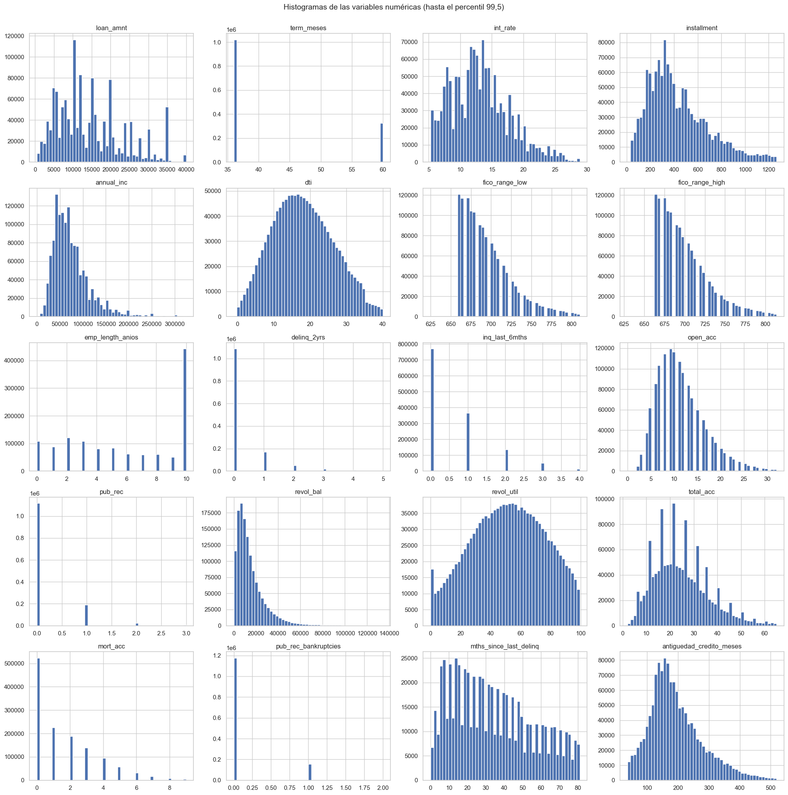
fig, axes = plt.subplots(5, 4, figsize=(20, 16)) # Cuadrícula de 5×4 gráficos
for ax, col in zip(axes.ravel(), cfg.NUMERICAS_EDA): # Un boxplot por variable
ax.boxplot(df[col].dropna(), vert=False, flierprops={"markersize": 1, "alpha": 0.2}) # Boxplot horizontal con todos los datos
ax.set_title(col) # Título con el nombre de la variable
ax.set_yticks([]) # Oculta el eje Y (no aporta información)
fig.suptitle("Diagramas de caja (datos completos, incluidos outliers)", y=1.0, fontsize=14) # Título general
fig.tight_layout() # Ajusta los márgenes
guardar_figura(fig, "01_boxplots") # Exporta la figura
plt.show() # Muestra la figura
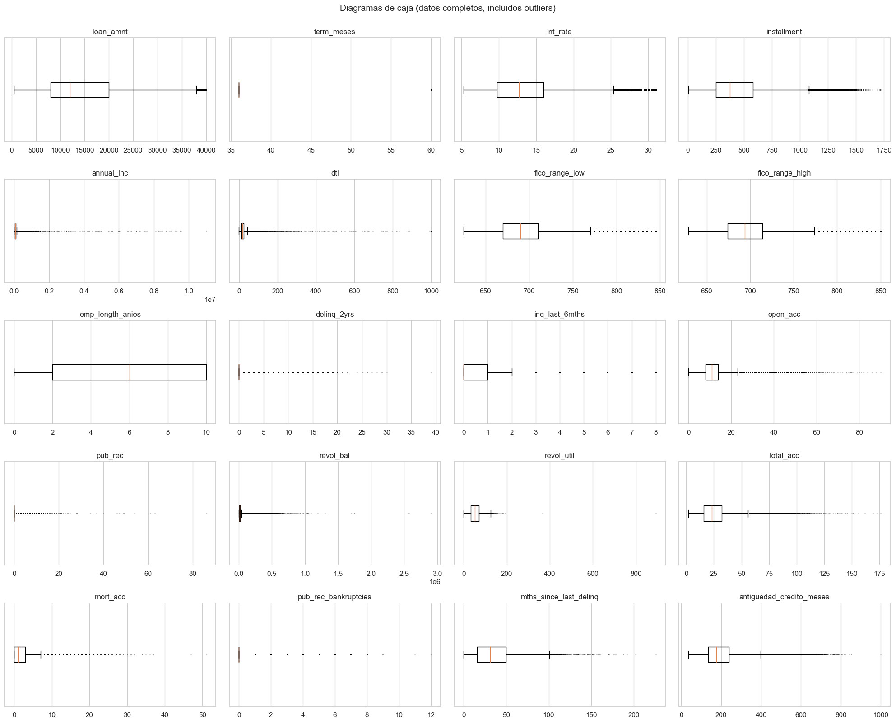
fig, axes = plt.subplots(1, 4, figsize=(20, 4)) # Cuatro gráficos en una fila
for i, col in enumerate(cfg.VARIABLES_LOG): # Para cada variable muy asimétrica
axes[2 * i].hist(df[col].dropna().clip(upper=df[col].quantile(0.995)), bins=60) # Distribución original (recortada)
axes[2 * i].set_title(f"{col} (original)") # Título
axes[2 * i + 1].hist(np.log1p(df[col].dropna().clip(lower=0)), bins=60, color="#DD8452") # Distribución con log1p
axes[2 * i + 1].set_title(f"log1p({col}) asimetría={stats.skew(np.log1p(df[col].dropna().clip(lower=0))):.2f}") # Título con la nueva asimetría
fig.tight_layout() # Ajusta los márgenes
plt.show() # Muestra la figura
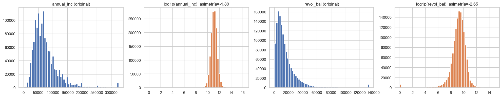
Comentario (numéricas).
Ninguna variable es normal (p < 0.001 en D’Agostino-Pearson para todas; con 1,3 M de observaciones cualquier desviación es significativa). Las asimetrías más extremas son
annual_inc(46, curtosis ≈ 4.800),dti(27),revol_bal(13,7) ypub_rec(11,6).log1preduce la asimetría deannual_inc(46 → −1,9) yrevol_bal(13,7 → −2,6; la cola izquierda restante se debe a los ceros), por lo que se aplicará en el preprocesamiento (ayuda a la regresión logística, LinearSVC y Naive Bayes; a los árboles les es indiferente). Box-Cox no es aplicable directamente porque hay ceros.Outliers (regla IQR):
delinq_2yrs(19 %),pub_rec(17 %) ypub_rec_bankruptcies(12 %) tienen IQR = 0, así que cualquier valor distinto de 0 se marca como atípico: no son errores sino eventos raros.term_mesessolo toma 36 o 60. Sí hay valores implausibles:dti= 999,revol_util= 892 %,annual_inc= 11 M. Se conservan (no se permite eliminar filas y los árboles son robustos); el escalado estándar los amortigua para los modelos lineales.Faltantes: solo
mths_since_last_delinqsupera el umbral del 30 % (50,5 %); el resto tiene < 6 %. Pese a superar el umbral no se elimina: su nulo significa «nunca tuvo morosidad» y es informativo (ver sección de faltantes) → indicador + imputación.
Variables categóricas#
tablas_cat = {} # Diccionario variable → tabla de frecuencias
for col in cfg.CATEGORICAS_EDA: # Recorre cada variable categórica
t = df[col].value_counts(dropna=False).to_frame("frecuencia") # Frecuencia absoluta (incluye nulos)
t["porcentaje"] = 100 * t["frecuencia"] / len(df) # Frecuencia relativa
t["rara_<1%"] = t["porcentaje"] < 100 * cfg.UMBRAL_CATEGORIA_RARA # Marca categorías con menos del 1 %
tablas_cat[col] = t # Guarda la tabla
print(f"\n=== {col}: {len(t)} categorías, {int(t['rara_<1%'].sum())} raras, nulos = {100 * df[col].isna().mean():.2f} %") # Resumen
display(t.head(15)) # Muestra hasta 15 categorías
=== grade: 7 categorías, 1 raras, nulos = 0.00 %
| frecuencia | porcentaje | rara_<1% | |
|---|---|---|---|
| grade | |||
| B | 392741 | 29.1933 | False |
| C | 381686 | 28.3716 | False |
| A | 235090 | 17.4748 | False |
| D | 200953 | 14.9373 | False |
| E | 93650 | 6.9612 | False |
| F | 32058 | 2.3829 | False |
| G | 9132 | 0.6788 | True |
=== sub_grade: 35 categorías, 10 raras, nulos = 0.00 %
| frecuencia | porcentaje | rara_<1% | |
|---|---|---|---|
| sub_grade | |||
| C1 | 85494 | 6.3550 | False |
| B4 | 83199 | 6.1844 | False |
| B5 | 82538 | 6.1352 | False |
| B3 | 81827 | 6.0824 | False |
| C2 | 79213 | 5.8881 | False |
| C3 | 74998 | 5.5748 | False |
| C4 | 74421 | 5.5319 | False |
| B2 | 74024 | 5.5024 | False |
| B1 | 71153 | 5.2890 | False |
| C5 | 67560 | 5.0219 | False |
| A5 | 64003 | 4.7575 | False |
| A4 | 52235 | 3.8827 | False |
| D1 | 51321 | 3.8148 | False |
| D2 | 44848 | 3.3337 | False |
| A1 | 43678 | 3.2467 | False |
=== home_ownership: 6 categorías, 3 raras, nulos = 0.00 %
| frecuencia | porcentaje | rara_<1% | |
|---|---|---|---|
| home_ownership | |||
| MORTGAGE | 665579 | 49.4740 | False |
| RENT | 534421 | 39.7247 | False |
| OWN | 144832 | 10.7657 | False |
| ANY | 286 | 0.0213 | True |
| OTHER | 144 | 0.0107 | True |
| NONE | 48 | 0.0036 | True |
=== verification_status: 3 categorías, 0 raras, nulos = 0.00 %
| frecuencia | porcentaje | rara_<1% | |
|---|---|---|---|
| verification_status | |||
| Source Verified | 521273 | 38.7474 | False |
| Verified | 418336 | 31.0959 | False |
| Not Verified | 405701 | 30.1567 | False |
=== purpose: 14 categorías, 6 raras, nulos = 0.00 %
| frecuencia | porcentaje | rara_<1% | |
|---|---|---|---|
| purpose | |||
| debt_consolidation | 780321 | 58.0031 | False |
| credit_card | 295279 | 21.9488 | False |
| home_improvement | 87504 | 6.5044 | False |
| other | 77875 | 5.7886 | False |
| major_purchase | 29425 | 2.1872 | False |
| medical | 15554 | 1.1562 | False |
| small_business | 15416 | 1.1459 | False |
| car | 14585 | 1.0841 | False |
| moving | 9480 | 0.7047 | True |
| vacation | 9065 | 0.6738 | True |
| house | 7253 | 0.5391 | True |
| wedding | 2294 | 0.1705 | True |
| renewable_energy | 933 | 0.0694 | True |
| educational | 326 | 0.0242 | True |
=== addr_state: 51 categorías, 23 raras, nulos = 0.00 %
| frecuencia | porcentaje | rara_<1% | |
|---|---|---|---|
| addr_state | |||
| CA | 196528 | 14.6084 | False |
| TX | 110169 | 8.1891 | False |
| NY | 109842 | 8.1648 | False |
| FL | 95606 | 7.1066 | False |
| IL | 51720 | 3.8445 | False |
| NJ | 48449 | 3.6013 | False |
| PA | 45522 | 3.3838 | False |
| OH | 43842 | 3.2589 | False |
| GA | 43376 | 3.2242 | False |
| VA | 38040 | 2.8276 | False |
| NC | 37784 | 2.8086 | False |
| MI | 35234 | 2.6190 | False |
| AZ | 32695 | 2.4303 | False |
| MD | 31227 | 2.3212 | False |
| MA | 30977 | 2.3026 | False |
=== initial_list_status: 2 categorías, 0 raras, nulos = 0.00 %
| frecuencia | porcentaje | rara_<1% | |
|---|---|---|---|
| initial_list_status | |||
| w | 784010 | 58.2773 | False |
| f | 561300 | 41.7227 | False |
=== application_type: 2 categorías, 0 raras, nulos = 0.00 %
| frecuencia | porcentaje | rara_<1% | |
|---|---|---|---|
| application_type | |||
| Individual | 1319510 | 98.0822 | False |
| Joint App | 25800 | 1.9178 | False |
fig, axes = plt.subplots(4, 2, figsize=(18, 22)) # Cuadrícula de 4×2 gráficos
for ax, col in zip(axes.ravel(), cfg.CATEGORICAS_EDA): # Un gráfico de barras por variable
t = tablas_cat[col]["porcentaje"].sort_values() # Porcentajes ordenados
colores = ["#C44E52" if p < 1 else "#4C72B0" for p in t.values] # Rojo para categorías raras
ax.barh(t.index.astype(str), t.values, color=colores) # Barras horizontales
ax.set_title(f"{col} (rojo = < 1 %)") # Título
ax.set_xlabel("% de préstamos") # Etiqueta del eje X
ax.tick_params(axis="y", labelsize=7 if len(t) > 20 else 9) # Letra más pequeña si hay muchas categorías
fig.tight_layout() # Ajusta los márgenes
guardar_figura(fig, "01_barras_categoricas") # Exporta la figura
plt.show() # Muestra la figura
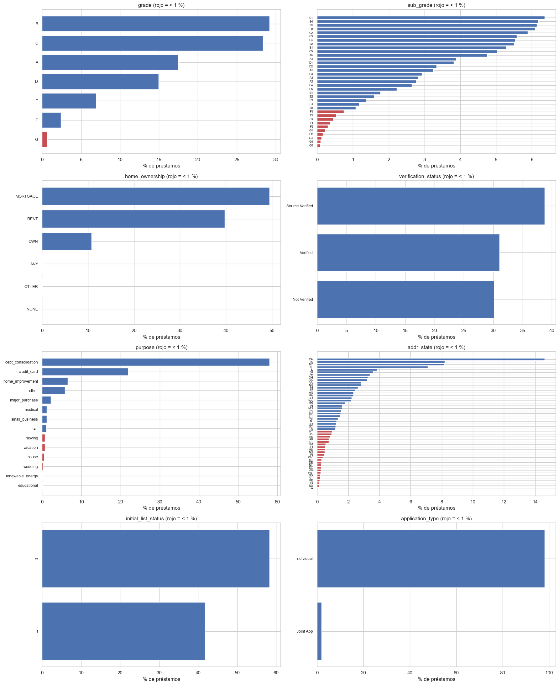
Comentario (categóricas). No hay nulos en ninguna categórica de trabajo. Categorías con
menos del 1 %: grade G (0,68 %), 10 sub-calificaciones, home_ownership ANY/OTHER/NONE
(478 préstamos en total, significado redundante: las tres indican «otra tenencia»),
seis propósitos (moving, vacation, house, wedding, renewable_energy, educational)
y 23 estados. Decisión: agrupar en OTROS toda categoría con < 1 % en train (se aprende
solo con train para no filtrar información de test). sub_grade es una partición fina de
grade (redundante) y application_type está muy concentrada (98 % individual).
Variable objetivo (default)#
clases = df[cfg.COL_TARGET].value_counts().sort_index().to_frame("n") # Conteo por clase
clases["%"] = 100 * clases["n"] / clases["n"].sum() # Porcentaje por clase
clases.index = ["0 = Fully Paid", "1 = Charged Off"] # Nombres descriptivos
display(clases) # Muestra la tabla
fig, axes = plt.subplots(1, 2, figsize=(12, 4)) # Dos gráficos lado a lado
axes[0].bar(clases.index, clases["n"], color=["#4C72B0", "#C44E52"]) # Gráfico de barras
axes[0].set_title("Distribución de la variable objetivo") # Título
axes[1].pie(clases["n"], labels=clases.index, autopct="%1.1f%%", colors=["#4C72B0", "#C44E52"]) # Gráfico de pastel
guardar_figura(fig, "01_target") # Exporta la figura
plt.show() # Muestra la figura
print(f"Razón de desbalance: {clases['n'].iloc[0] / clases['n'].iloc[1]:.2f} : 1") # Relación entre clases
| n | % | |
|---|---|---|
| 0 = Fully Paid | 1076751 | 80.0374 |
| 1 = Charged Off | 268559 | 19.9626 |
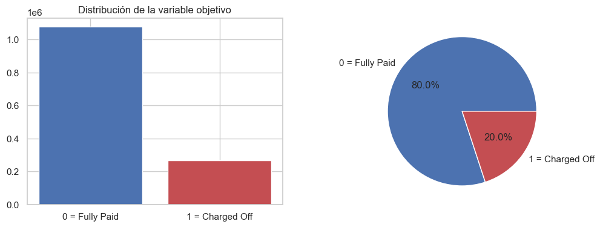
Razón de desbalance: 4.01 : 1
Comentario. El 80,0 % de los préstamos se pagó y el 20,0 % terminó en default (desbalance moderado 4:1). Implicaciones: (1) la partición debe ser estratificada; (2) la accuracy es engañosa (un modelo trivial obtiene 0,80), por lo que el criterio de selección es el AUC ROC y se reportan también precisión, recall, F1 y AUC-PR; (3) el umbral 0,5 tenderá a predecir casi siempre «pagado», así que para las decisiones (McNemar, F1) se optimiza el umbral con datos de train. No se aplica sobremuestreo: con 269 mil defaults la clase minoritaria está bien representada.
2.4 Análisis bidimensional#
Numéricas vs. default#
fig, axes = plt.subplots(5, 4, figsize=(20, 22)) # Cuadrícula de 5×4 gráficos
for ax, col in zip(axes.ravel(), cfg.NUMERICAS_EDA): # Un boxplot comparativo por variable
sns.boxplot(data=df, x=cfg.COL_TARGET, y=col, ax=ax, showfliers=False, # Boxplot por clase (sin dibujar outliers para legibilidad)
palette=["#4C72B0", "#C44E52"]) # Colores por clase
ax.set_title(col) # Título
fig.suptitle("Boxplots por clase (0 = pagado, 1 = default); outliers omitidos del dibujo", y=1.0, fontsize=14) # Título general
fig.tight_layout() # Ajusta los márgenes
guardar_figura(fig, "01_boxplots_por_clase") # Exporta la figura
plt.show() # Muestra la figura
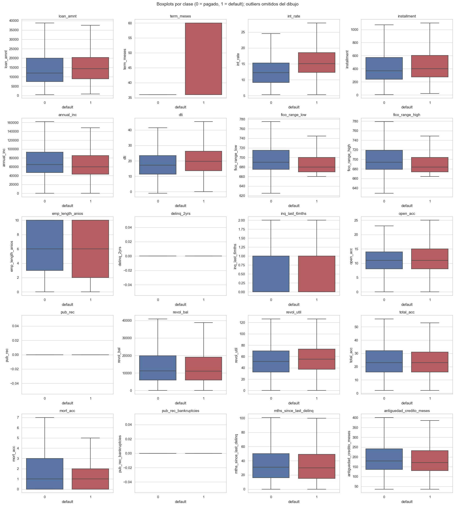
claves = ["int_rate", "fico_range_high", "dti", "annual_inc", "loan_amnt", "term_meses"] # Variables clave para violines
fig, axes = plt.subplots(2, 3, figsize=(18, 9)) # Cuadrícula de 2×3
for ax, col in zip(axes.ravel(), claves): # Un violin plot por variable
datos = df[[col, cfg.COL_TARGET]].dropna() # Datos sin nulos
datos = datos[datos[col] <= datos[col].quantile(0.99)] # Recorta el 1 % superior solo para visualizar
sns.violinplot(data=datos, x=cfg.COL_TARGET, y=col, ax=ax, # Violin plot por clase
palette=["#4C72B0", "#C44E52"], cut=0) # Colores y sin extrapolar la densidad
ax.set_title(col) # Título
fig.tight_layout() # Ajusta los márgenes
guardar_figura(fig, "01_violines") # Exporta la figura
plt.show() # Muestra la figura
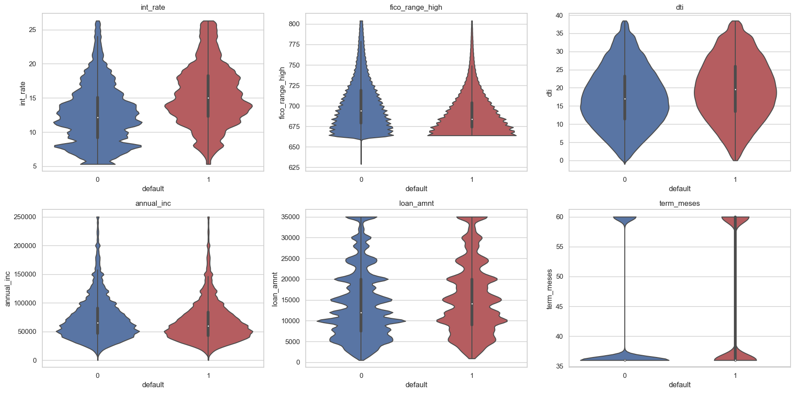
filas = [] # Lista de resultados por variable
for col in cfg.NUMERICAS_EDA: # Recorre cada variable numérica
d = df[[col, cfg.COL_TARGET]].dropna() # Pares sin nulos
x0 = d.loc[d[cfg.COL_TARGET] == 0, col] # Valores de la clase 0
x1 = d.loc[d[cfg.COL_TARGET] == 1, col] # Valores de la clase 1
t_stat, p_t = stats.ttest_ind(x1, x0, equal_var=False) # Prueba t de Welch (varianzas distintas)
u_stat, p_u = stats.mannwhitneyu(x1, x0, alternative="two-sided") # Prueba de Mann-Whitney (no paramétrica)
r_pb, p_pb = stats.pointbiserialr(d[cfg.COL_TARGET], d[col]) # Correlación punto-biserial
filas.append({ # Guarda el resultado
"media_0": x0.mean(), "media_1": x1.mean(), "dif_medias": x1.mean() - x0.mean(), # Medias y diferencia
"mediana_0": x0.median(), "mediana_1": x1.median(), # Medianas por clase
"p_t_welch": p_t, "p_mann_whitney": p_u, # Valores p de ambas pruebas
"r_punto_biserial": r_pb, "abs_r": abs(r_pb), # Correlación y su valor absoluto
})
biv_num = pd.DataFrame(filas, index=cfg.NUMERICAS_EDA).sort_values("abs_r", ascending=False) # Ordena por fuerza de asociación
biv_num # Muestra la tabla
| media_0 | media_1 | dif_medias | mediana_0 | mediana_1 | p_t_welch | p_mann_whitney | r_punto_biserial | abs_r | |
|---|---|---|---|---|---|---|---|---|---|
| int_rate | 12.6233 | 15.7107 | 3.0874 | 12.2300 | 15.0500 | 0.0000 | 0.0000 | 0.2588 | 0.2588 |
| term_meses | 40.8871 | 45.4108 | 4.5237 | 36.0000 | 36.0000 | 0.0000 | 0.0000 | 0.1761 | 0.1761 |
| fico_range_low | 698.2639 | 687.8501 | -10.4138 | 690.0000 | 680.0000 | 0.0000 | 0.0000 | -0.1307 | 0.1307 |
| fico_range_high | 702.2641 | 691.8502 | -10.4139 | 694.0000 | 684.0000 | 0.0000 | 0.0000 | -0.1307 | 0.1307 |
| dti | 17.8116 | 20.1712 | 2.3596 | 17.1100 | 19.7600 | 0.0000 | 0.0000 | 0.0845 | 0.0845 |
| mort_acc | 1.7465 | 1.3710 | -0.3754 | 1.0000 | 1.0000 | 0.0000 | 0.0000 | -0.0753 | 0.0753 |
| loan_amnt | 14,134.3698 | 15,565.0554 | 1,430.6856 | 12,000.0000 | 14,350.0000 | 0.0000 | 0.0000 | 0.0656 | 0.0656 |
| inq_last_6mths | 0.6244 | 0.7780 | 0.1536 | 0.0000 | 0.0000 | 0.0000 | 0.0000 | 0.0655 | 0.0655 |
| revol_util | 51.0747 | 54.7584 | 3.6838 | 51.3000 | 55.5000 | 0.0000 | 0.0000 | 0.0600 | 0.0600 |
| installment | 431.3232 | 465.1480 | 33.8248 | 368.2600 | 402.8300 | 0.0000 | 0.0000 | 0.0517 | 0.0517 |
| annual_inc | 77,705.9455 | 70,400.7433 | -7,305.2022 | 65,000.0000 | 60,000.0000 | 0.0000 | 0.0000 | -0.0418 | 0.0418 |
| antiguedad_credito_meses | 196.6160 | 189.0856 | -7.5304 | 179.0000 | 171.0000 | 0.0000 | 0.0000 | -0.0334 | 0.0334 |
| open_acc | 11.5168 | 11.9013 | 0.3845 | 11.0000 | 11.0000 | 0.0000 | 0.0000 | 0.0281 | 0.0281 |
| pub_rec | 0.2074 | 0.2468 | 0.0394 | 0.0000 | 0.0000 | 0.0000 | 0.0000 | 0.0262 | 0.0262 |
| pub_rec_bankruptcies | 0.1297 | 0.1536 | 0.0239 | 0.0000 | 0.0000 | 0.0000 | 0.0000 | 0.0253 | 0.0253 |
| revol_bal | 16,471.2460 | 15,353.5006 | -1,117.7455 | 11,150.0000 | 11,072.0000 | 0.0000 | 0.0000 | -0.0200 | 0.0200 |
| delinq_2yrs | 0.3093 | 0.3519 | 0.0426 | 0.0000 | 0.0000 | 0.0000 | 0.0000 | 0.0194 | 0.0194 |
| emp_length_anios | 5.9918 | 5.8592 | -0.1325 | 6.0000 | 6.0000 | 0.0000 | 0.0000 | -0.0142 | 0.0142 |
| mths_since_last_delinq | 34.4500 | 33.7829 | -0.6671 | 31.0000 | 30.0000 | 0.0000 | 0.0000 | -0.0123 | 0.0123 |
| total_acc | 25.0486 | 24.7094 | -0.3392 | 23.0000 | 23.0000 | 0.0000 | 0.0000 | -0.0113 | 0.0113 |
fig, ax = plt.subplots(figsize=(10, 7)) # Figura para la correlación punto-biserial
biv_num["r_punto_biserial"].sort_values().plot.barh(ax=ax, color=["#C44E52" if v > 0 else "#4C72B0" for v in biv_num["r_punto_biserial"].sort_values()]) # Barras por signo
ax.set_title("Correlación punto-biserial con default") # Título
ax.axvline(0, color="black", lw=0.8) # Línea de referencia en cero
guardar_figura(fig, "01_punto_biserial") # Exporta la figura
plt.show() # Muestra la figura
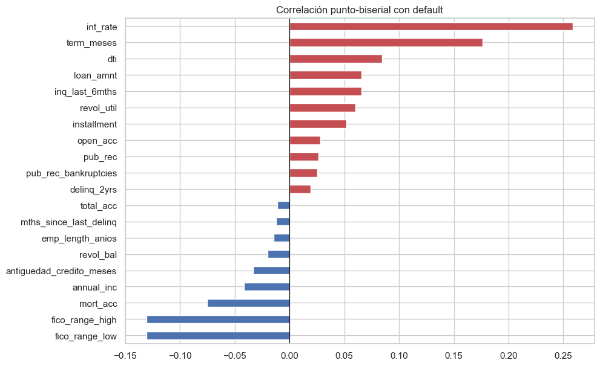
Comentario. Todas las diferencias de medias son significativas (p < 0.001 en Welch y
Mann-Whitney), algo esperable con 1,3 M de filas; por eso se ordena por la magnitud de la
correlación punto-biserial. Las numéricas más asociadas al default son int_rate
(r = 0,26; media 15,7 % en defaults vs 12,6 %), term_meses (0,18: los préstamos a 60
meses son más riesgosos), fico_range_high (−0,13; 10 puntos menos en defaults), dti
(0,08), mort_acc (−0,08), loan_amnt, inq_last_6mths y revol_util (≈ 0,06). El
resto tiene |r| < 0,05: aportan poco de forma individual, aunque pueden interactuar en
modelos no lineales.
Categóricas vs. default#
def v_cramer(x, y): # Coeficiente V de Cramér entre dos variables categóricas
tabla = pd.crosstab(x, y) # Tabla de contingencia
chi2 = stats.chi2_contingency(tabla, correction=False)[0] # Estadístico chi-cuadrado
n = tabla.values.sum() # Total de observaciones
k = min(tabla.shape) - 1 # Grados de libertad mínimos
return np.sqrt(chi2 / (n * k)) if k > 0 else 0.0 # V = sqrt(χ² / (n·k))
filas = [] # Resultados de la prueba chi-cuadrado
tasas_cat = {} # Tasa de default por categoría
for col in cfg.CATEGORICAS_EDA: # Recorre cada categórica
x = df[col].fillna(cfg.CATEGORIA_FALTANTE) # Nulos como categoría propia
tabla = pd.crosstab(x, df[cfg.COL_TARGET]) # Tabla de contingencia
chi2, p, gl, _ = stats.chi2_contingency(tabla) # Prueba de independencia
tasa = pd.crosstab(x, df[cfg.COL_TARGET], normalize="index")[1].sort_values(ascending=False) # Proporción de default por categoría
tasas_cat[col] = tasa # Guarda las tasas
filas.append({"chi2": chi2, "gl": gl, "p_valor": p, "V_cramer": v_cramer(x, df[cfg.COL_TARGET]), # Estadísticos
"categoria_mayor_tasa": tasa.index[0], "mayor_tasa": tasa.iloc[0], # Categoría más riesgosa
"categoria_menor_tasa": tasa.index[-1], "menor_tasa": tasa.iloc[-1]}) # Categoría menos riesgosa
biv_cat = pd.DataFrame(filas, index=cfg.CATEGORICAS_EDA).sort_values("V_cramer", ascending=False) # Tabla ordenada
biv_cat # Muestra la tabla
| chi2 | gl | p_valor | V_cramer | categoria_mayor_tasa | mayor_tasa | categoria_menor_tasa | menor_tasa | |
|---|---|---|---|---|---|---|---|---|
| sub_grade | 96,525.3877 | 34 | 0.0000 | 0.2679 | G5 | 0.5360 | A1 | 0.0322 |
| grade | 92,284.2511 | 6 | 0.0000 | 0.2619 | G | 0.4993 | A | 0.0604 |
| verification_status | 11,387.4390 | 2 | 0.0000 | 0.0920 | Verified | 0.2385 | Not Verified | 0.1467 |
| home_ownership | 6,743.1900 | 5 | 0.0000 | 0.0708 | RENT | 0.2322 | NONE | 0.1458 |
| purpose | 4,144.1960 | 13 | 0.0000 | 0.0555 | small_business | 0.2971 | wedding | 0.1216 |
| addr_state | 3,403.5833 | 50 | 0.0000 | 0.0503 | MS | 0.2608 | DC | 0.1321 |
| application_type | 352.1009 | 1 | 0.0000 | 0.0162 | Joint App | 0.2459 | Individual | 0.1987 |
| initial_list_status | 71.3174 | 1 | 0.0000 | 0.0073 | w | 0.2021 | f | 0.1962 |
for col in ["grade", "home_ownership", "verification_status", "purpose", "initial_list_status", "application_type"]: # Tablas cruzadas de las categóricas más legibles
ct = pd.crosstab(df[col].fillna(cfg.CATEGORIA_FALTANTE), df[cfg.COL_TARGET], margins=True) # Frecuencias con totales
ct["tasa_default_%"] = 100 * ct[1] / ct["All"] # Tasa de impago por categoría
display(ct.sort_values("tasa_default_%", ascending=False)) # Muestra la tabla ordenada por riesgo
| default | 0 | 1 | All | tasa_default_% |
|---|---|---|---|---|
| grade | ||||
| G | 4572 | 4560 | 9132 | 49.9343 |
| F | 17567 | 14491 | 32058 | 45.2024 |
| E | 57615 | 36035 | 93650 | 38.4784 |
| D | 139899 | 61054 | 200953 | 30.3822 |
| C | 296037 | 85649 | 381686 | 22.4396 |
| All | 1076751 | 268559 | 1345310 | 19.9626 |
| B | 340172 | 52569 | 392741 | 13.3852 |
| A | 220889 | 14201 | 235090 | 6.0407 |
| default | 0 | 1 | All | tasa_default_% |
|---|---|---|---|---|
| home_ownership | ||||
| RENT | 410347 | 124074 | 534421 | 23.2165 |
| OWN | 114968 | 29864 | 144832 | 20.6198 |
| All | 1076751 | 268559 | 1345310 | 19.9626 |
| ANY | 230 | 56 | 286 | 19.5804 |
| OTHER | 117 | 27 | 144 | 18.7500 |
| MORTGAGE | 551048 | 114531 | 665579 | 17.2077 |
| NONE | 41 | 7 | 48 | 14.5833 |
| default | 0 | 1 | All | tasa_default_% |
|---|---|---|---|---|
| verification_status | ||||
| Verified | 318544 | 99792 | 418336 | 23.8545 |
| Source Verified | 412041 | 109232 | 521273 | 20.9549 |
| All | 1076751 | 268559 | 1345310 | 19.9626 |
| Not Verified | 346166 | 59535 | 405701 | 14.6746 |
| default | 0 | 1 | All | tasa_default_% |
|---|---|---|---|---|
| purpose | ||||
| small_business | 10836 | 4580 | 15416 | 29.7094 |
| renewable_energy | 712 | 221 | 933 | 23.6870 |
| moving | 7266 | 2214 | 9480 | 23.3544 |
| house | 5666 | 1587 | 7253 | 21.8806 |
| medical | 12167 | 3387 | 15554 | 21.7757 |
| debt_consolidation | 615307 | 165014 | 780321 | 21.1469 |
| other | 61490 | 16385 | 77875 | 21.0401 |
| All | 1076751 | 268559 | 1345310 | 19.9626 |
| vacation | 7327 | 1738 | 9065 | 19.1726 |
| major_purchase | 23952 | 5473 | 29425 | 18.5998 |
| home_improvement | 72002 | 15502 | 87504 | 17.7158 |
| educational | 270 | 56 | 326 | 17.1779 |
| credit_card | 245297 | 49982 | 295279 | 16.9270 |
| car | 12444 | 2141 | 14585 | 14.6795 |
| wedding | 2015 | 279 | 2294 | 12.1622 |
| default | 0 | 1 | All | tasa_default_% |
|---|---|---|---|---|
| initial_list_status | ||||
| w | 625570 | 158440 | 784010 | 20.2089 |
| All | 1076751 | 268559 | 1345310 | 19.9626 |
| f | 451181 | 110119 | 561300 | 19.6186 |
| default | 0 | 1 | All | tasa_default_% |
|---|---|---|---|---|
| application_type | ||||
| Joint App | 19456 | 6344 | 25800 | 24.5891 |
| All | 1076751 | 268559 | 1345310 | 19.9626 |
| Individual | 1057295 | 262215 | 1319510 | 19.8721 |
fig, axes = plt.subplots(4, 2, figsize=(18, 22)) # Cuadrícula de 4×2
tasa_global = df[cfg.COL_TARGET].mean() # Tasa de default global
for ax, col in zip(axes.ravel(), cfg.CATEGORICAS_EDA): # Un gráfico de barras apiladas por variable
prop = pd.crosstab(df[col].fillna(cfg.CATEGORIA_FALTANTE), df[cfg.COL_TARGET], normalize="index") # Proporciones por categoría
prop = prop.sort_values(1) # Ordena por tasa de default
prop.plot.barh(stacked=True, ax=ax, color=["#4C72B0", "#C44E52"], width=0.85, legend=False) # Barras apiladas 0/1
ax.axvline(1 - tasa_global, color="black", ls="--", lw=1) # Línea de la tasa global
ax.set_title(f"{col}: proporción de default por categoría") # Título
ax.tick_params(axis="y", labelsize=7 if len(prop) > 20 else 9) # Letra más pequeña si hay muchas categorías
fig.tight_layout() # Ajusta los márgenes
guardar_figura(fig, "01_barras_apiladas") # Exporta la figura
plt.show() # Muestra la figura
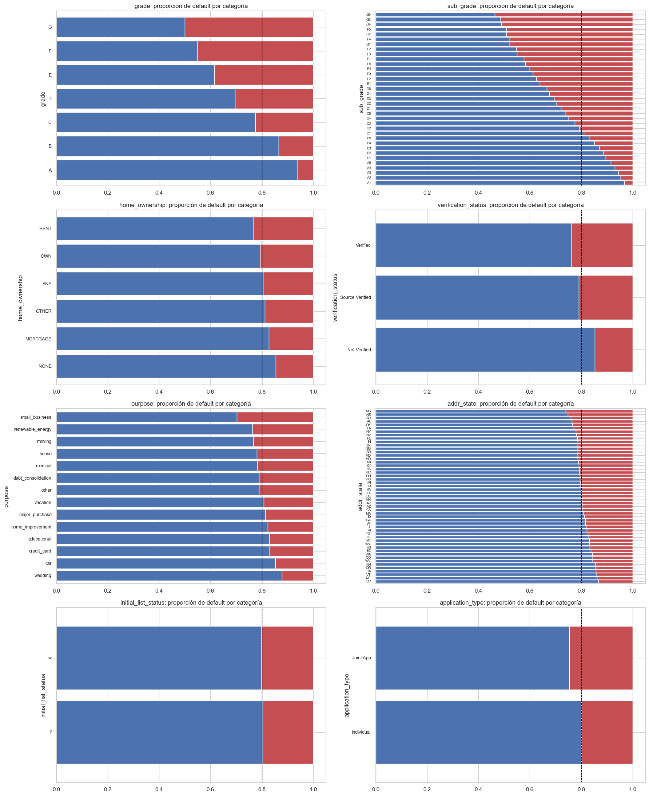
Comentario. La prueba chi-cuadrado rechaza la independencia para todas las categóricas
(p < 0.001), pero la fuerza de asociación (V de Cramér) es muy distinta: sub_grade
(0,27) y grade (0,26) dominan — la tasa de default crece de forma monótona de 6 % en A a
50 % en G —; siguen verification_status (0,09; los ingresos verificados tienen más
default, 23,9 %, porque Lending Club verifica sobre todo a los solicitantes más riesgosos),
home_ownership (RENT 23,2 %), purpose (small_business 29,7 %) y addr_state (0,05).
initial_list_status y application_type son casi independientes del target (V < 0,02).
Multicolinealidad#
corr = df[cfg.NUMERICAS_EDA].corr(method="pearson") # Matriz de correlación de Pearson
fig, ax = plt.subplots(figsize=(15, 12)) # Figura grande para el mapa de calor
sns.heatmap(corr, annot=True, fmt=".2f", cmap="RdBu_r", center=0, vmin=-1, vmax=1, ax=ax, annot_kws={"size": 7}) # Mapa de calor
ax.set_title("Correlación de Pearson entre variables numéricas") # Título
guardar_figura(fig, "01_correlacion") # Exporta la figura
plt.show() # Muestra la figura
pares = corr.where(np.triu(np.ones(corr.shape, dtype=bool), k=1)).stack() # Pares únicos (triángulo superior)
pares.reindex(pares.abs().sort_values(ascending=False).index).head(12).to_frame("r") # Pares más correlacionados
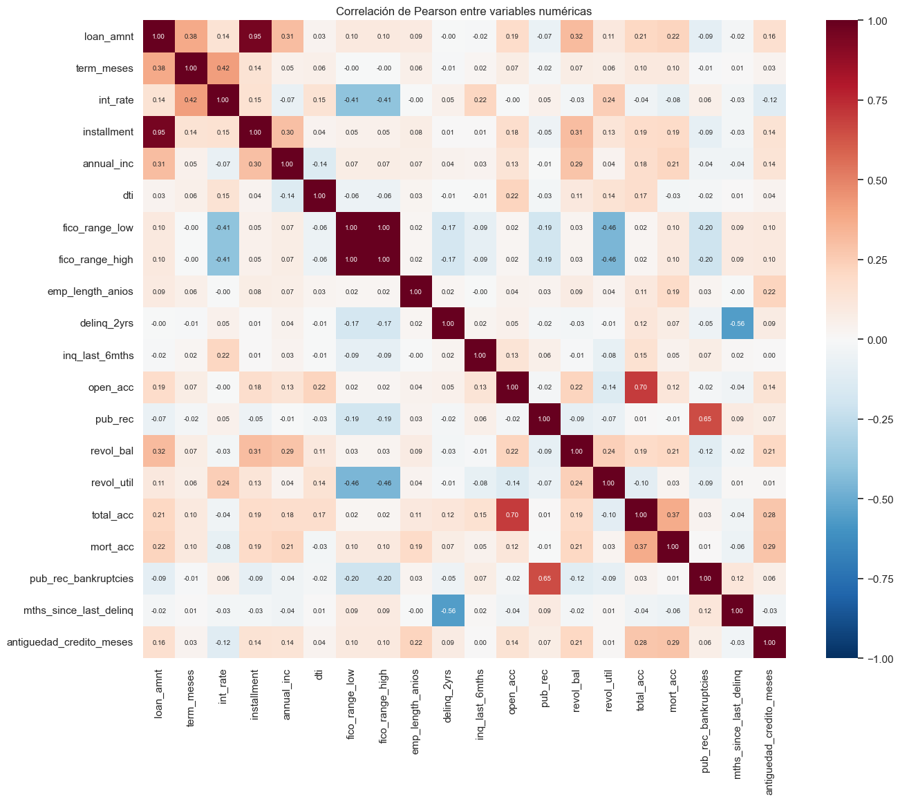
| r | ||
|---|---|---|
| fico_range_low | fico_range_high | 1.0000 |
| loan_amnt | installment | 0.9534 |
| open_acc | total_acc | 0.7013 |
| pub_rec | pub_rec_bankruptcies | 0.6496 |
| delinq_2yrs | mths_since_last_delinq | -0.5560 |
| fico_range_low | revol_util | -0.4600 |
| fico_range_high | revol_util | -0.4600 |
| term_meses | int_rate | 0.4172 |
| int_rate | fico_range_low | -0.4054 |
| fico_range_high | -0.4054 | |
| loan_amnt | term_meses | 0.3809 |
| total_acc | mort_acc | 0.3679 |
matriz_v = pd.DataFrame(index=cfg.CATEGORICAS_EDA, columns=cfg.CATEGORICAS_EDA, dtype=float) # Matriz vacía de V de Cramér
for a in cfg.CATEGORICAS_EDA: # Primera variable del par
for b in cfg.CATEGORICAS_EDA: # Segunda variable del par
matriz_v.loc[a, b] = 1.0 if a == b else v_cramer(df[a].fillna(cfg.CATEGORIA_FALTANTE), df[b].fillna(cfg.CATEGORIA_FALTANTE)) # V de Cramér del par
fig, ax = plt.subplots(figsize=(9, 7)) # Figura para el mapa de calor
sns.heatmap(matriz_v, annot=True, fmt=".2f", cmap="Purples", vmin=0, vmax=1, ax=ax) # Mapa de calor de V de Cramér
ax.set_title("V de Cramér entre variables categóricas") # Título
guardar_figura(fig, "01_cramer") # Exporta la figura
plt.show() # Muestra la figura
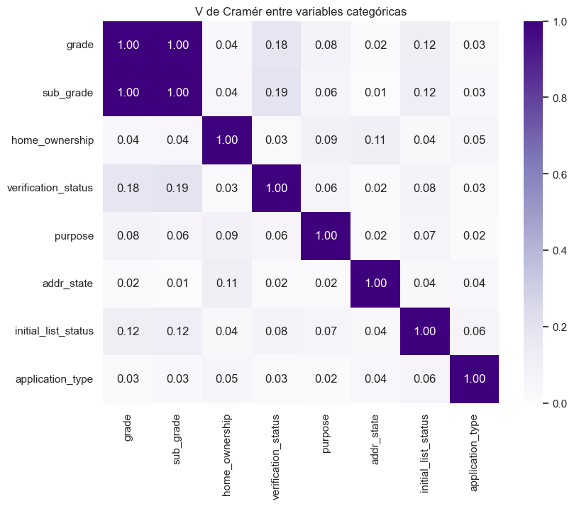
fig, ax = plt.subplots(figsize=(10, 5)) # Relación entre sub-calificación y tasa de interés
orden = sorted(df["sub_grade"].unique()) # Sub-calificaciones en orden A1…G5
sns.boxplot(data=df, x="sub_grade", y="int_rate", order=orden, showfliers=False, ax=ax, color="#8172B3") # Tasa de interés por sub-calificación
ax.tick_params(axis="x", rotation=90) # Rota las etiquetas
ax.set_title("int_rate por sub_grade: la tasa de interés es casi una función de la calificación") # Título
plt.show() # Muestra la figura
print("Correlación de Spearman entre fico_range_high e int_rate:", round(stats.spearmanr(df["fico_range_high"], df["int_rate"])[0], 3)) # Redundancia sugerida por el enunciado
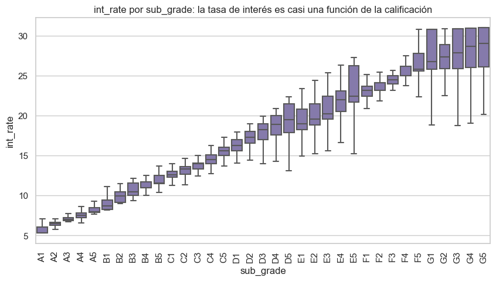
Correlación de Spearman entre fico_range_high e int_rate: -0.416
Comentario (multicolinealidad). Pares con |r| > 0,7: fico_range_low–fico_range_high
(r = 1,00: el rango siempre mide 4 puntos), loan_amnt–installment (0,95: la cuota es
función del monto, la tasa y el plazo) y open_acc–total_acc (0,70, justo en el límite).
Entre categóricas, grade–sub_grade tiene V ≈ 1 (una determina a la otra) y la tasa de
interés es prácticamente una función de la sub-calificación. La redundancia sugerida por el
enunciado fico_range_high–int_rate es moderada (ρ = −0,42), no suficiente para excluir.
Decisión: se excluyen fico_range_low, installment y sub_grade; se conservan
open_acc y total_acc (r en el límite y significado distinto) e int_rate junto a
grade (la tasa aporta variación dentro de cada grado).
Visualizaciones avanzadas#
El pairplot y la matriz de dispersión dibujan cada punto, por lo que (como permite el enunciado) se usa una muestra aleatoria de 5.000 filas solo para estos dos gráficos. Ningún cálculo ni modelo usa la muestra.
top_vars = ["int_rate", "fico_range_high", "dti", "annual_inc", "term_meses"] # Variables más relevantes
muestra_viz = df[top_vars + [cfg.COL_TARGET]].dropna().sample(5000, random_state=cfg.SEMILLA) # Muestra solo para visualización
muestra_viz["annual_inc"] = np.log1p(muestra_viz["annual_inc"]) # Escala logarítmica para el ingreso
g = sns.pairplot(muestra_viz, hue=cfg.COL_TARGET, palette=["#4C72B0", "#C44E52"], plot_kws={"s": 6, "alpha": 0.4}, corner=True) # Pairplot por clase
g.fig.suptitle("Pairplot (muestra de 5.000, annual_inc en log1p)", y=1.02) # Título
plt.show() # Muestra la figura
C:\Users\user-pc\.conda\envs\ml_venv\lib\site-packages\seaborn\axisgrid.py:118: UserWarning: The figure layout has changed to tight
self._figure.tight_layout(*args, **kwargs)
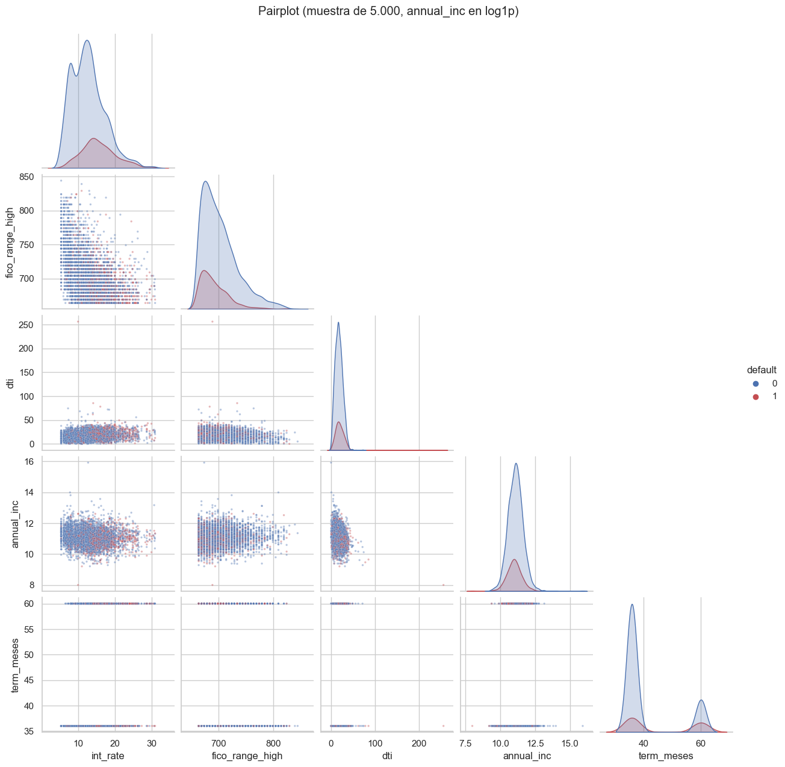
fig, axes = plt.subplots(2, 3, figsize=(18, 9)) # KDE comparativos por clase (datos completos)
for ax, col in zip(axes.ravel(), ["int_rate", "fico_range_high", "dti", "annual_inc", "revol_util", "antiguedad_credito_meses"]): # Variables relevantes
d = df[[col, cfg.COL_TARGET]].dropna() # Datos sin nulos
if col == "annual_inc": # El ingreso se grafica en escala log
d[col] = np.log1p(d[col]) # Transformación log1p
d = d[d[col].between(d[col].quantile(0.005), d[col].quantile(0.995))] # Recorta colas extremas solo para visualizar
for clase, color in [(0, "#4C72B0"), (1, "#C44E52")]: # Una curva por clase
sns.kdeplot(d.loc[d[cfg.COL_TARGET] == clase, col], ax=ax, color=color, fill=True, alpha=0.3, label=f"default={clase}", bw_adjust=1.5) # Densidad
ax.set_title(col if col != "annual_inc" else "log1p(annual_inc)") # Título
ax.legend() # Leyenda
fig.tight_layout() # Ajusta los márgenes
guardar_figura(fig, "01_kde") # Exporta la figura
plt.show() # Muestra la figura
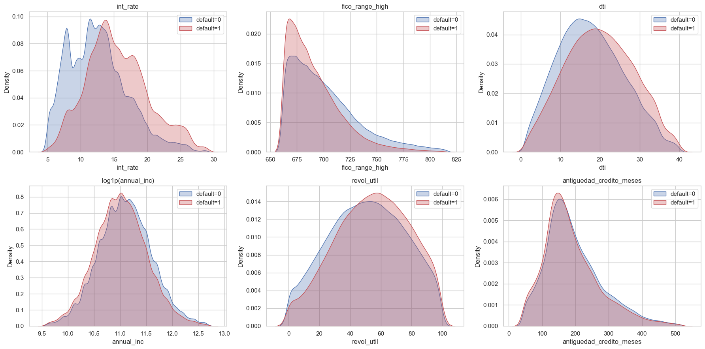
colores = muestra_viz[cfg.COL_TARGET].map({0: "#4C72B0", 1: "#C44E52"}) # Color de cada punto según la clase
pd.plotting.scatter_matrix(muestra_viz[top_vars], c=colores, figsize=(13, 13), s=6, alpha=0.4, diagonal="hist") # Matriz de dispersión de 5 variables
plt.suptitle("Matriz de dispersión (muestra de 5.000)", y=0.92) # Título
plt.show() # Muestra la figura
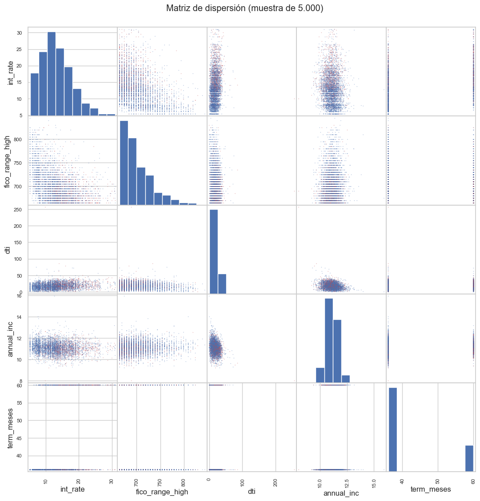
Comentario. Las densidades muestran solapamiento amplio entre clases: ninguna variable
separa por sí sola. Las diferencias más visibles son el desplazamiento de int_rate hacia
la derecha y de fico_range_high hacia la izquierda en los defaults. En el pairplot y la
matriz de dispersión no aparecen fronteras no lineales claras; sí se aprecia la estructura
discreta de term_meses y de FICO, y la relación decreciente entre FICO y tasa de interés.
Valores faltantes (análisis detallado)#
print(f"Columnas sin nulos: {(nulos_todas['pct_nulos'] == 0).sum()} | con nulos: {(nulos_todas['pct_nulos'] > 0).sum()} | "
f"> 30 %: {(nulos_todas['pct_nulos'] > 30).sum()} | > 70 %: {(nulos_todas['pct_nulos'] > 70).sum()}") # Resumen de las 151 columnas
nulos_todas.head(40) # Las 40 columnas con más nulos
Columnas sin nulos: 46 | con nulos: 105 | > 30 %: 58 | > 70 %: 42
| n_nulos | pct_nulos | |
|---|---|---|
| next_pymnt_d | 1345310 | 100.0000 |
| member_id | 1345310 | 100.0000 |
| orig_projected_additional_accrued_interest | 1341551 | 99.7206 |
| hardship_start_date | 1339556 | 99.5723 |
| hardship_length | 1339556 | 99.5723 |
| hardship_type | 1339556 | 99.5723 |
| hardship_reason | 1339556 | 99.5723 |
| hardship_status | 1339556 | 99.5723 |
| deferral_term | 1339556 | 99.5723 |
| hardship_amount | 1339556 | 99.5723 |
| hardship_end_date | 1339556 | 99.5723 |
| payment_plan_start_date | 1339556 | 99.5723 |
| hardship_dpd | 1339556 | 99.5723 |
| hardship_loan_status | 1339556 | 99.5723 |
| hardship_payoff_balance_amount | 1339556 | 99.5723 |
| hardship_last_payment_amount | 1339556 | 99.5723 |
| sec_app_mths_since_last_major_derog | 1338665 | 99.5061 |
| sec_app_revol_util | 1327008 | 98.6396 |
| revol_bal_joint | 1326681 | 98.6153 |
| sec_app_chargeoff_within_12_mths | 1326680 | 98.6152 |
| sec_app_open_act_il | 1326680 | 98.6152 |
| sec_app_num_rev_accts | 1326680 | 98.6152 |
| sec_app_earliest_cr_line | 1326680 | 98.6152 |
| sec_app_open_acc | 1326680 | 98.6152 |
| sec_app_collections_12_mths_ex_med | 1326680 | 98.6152 |
| sec_app_fico_range_high | 1326680 | 98.6152 |
| sec_app_inq_last_6mths | 1326680 | 98.6152 |
| sec_app_fico_range_low | 1326680 | 98.6152 |
| sec_app_mort_acc | 1326680 | 98.6152 |
| verification_status_joint | 1319715 | 98.0975 |
| dti_joint | 1319513 | 98.0824 |
| annual_inc_joint | 1319510 | 98.0822 |
| settlement_term | 1312034 | 97.5265 |
| settlement_date | 1312034 | 97.5265 |
| debt_settlement_flag_date | 1312034 | 97.5265 |
| settlement_status | 1312034 | 97.5265 |
| settlement_percentage | 1312034 | 97.5265 |
| settlement_amount | 1312034 | 97.5265 |
| desc | 1221780 | 90.8177 |
| mths_since_last_record | 1116755 | 83.0110 |
fig, ax = plt.subplots(figsize=(10, 22)) # Figura alta para las columnas con nulos
d = nulos_todas.loc[nulos_todas["pct_nulos"] > 0, "pct_nulos"].sort_values() # Columnas con nulos
ax.barh(d.index, d.values, color=["#C44E52" if v > 70 else "#DD8452" if v > 30 else "#4C72B0" for v in d.values]) # Barras por severidad
ax.axvline(30, color="gray", ls="--"); ax.axvline(70, color="black", ls="--") # Umbrales 30 % y 70 %
ax.set_xlabel("% de nulos"); ax.tick_params(axis="y", labelsize=7) # Etiquetas
ax.set_title("Porcentaje de nulos por columna (préstamos con desenlace final)") # Título
guardar_figura(fig, "01_nulos_columnas") # Exporta la figura
plt.show() # Muestra la figura
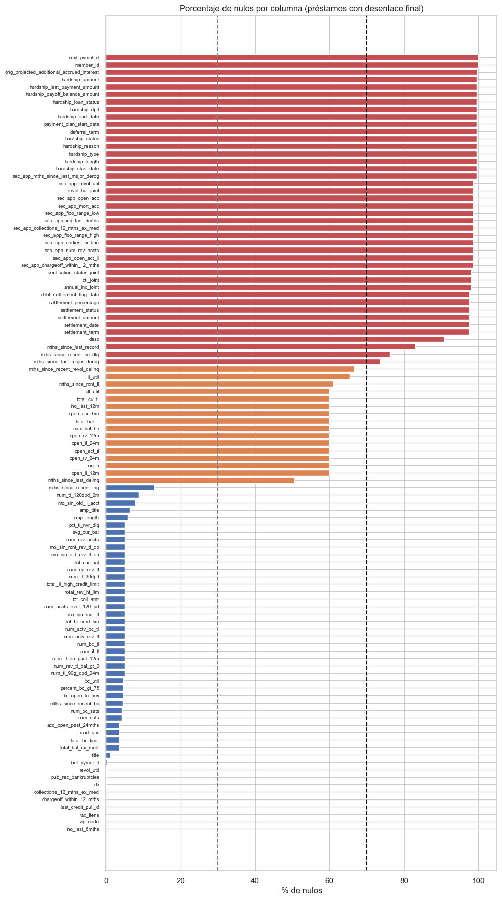
fig, ax = plt.subplots(figsize=(14, 18)) # Mapa de calor del patrón de nulos a lo largo del tiempo
sns.heatmap(nulos_por_anio.T, cmap="Reds", vmin=0, vmax=1, ax=ax, cbar_kws={"label": "proporción de nulos"}) # Filas = columnas, columnas = año
ax.set_xlabel("Año de emisión"); ax.tick_params(axis="y", labelsize=6) # Etiquetas
ax.set_title("Patrón de valores faltantes por año de emisión (todas las filas)") # Título
guardar_figura(fig, "01_nulos_por_anio") # Exporta la figura
plt.show() # Muestra la figura
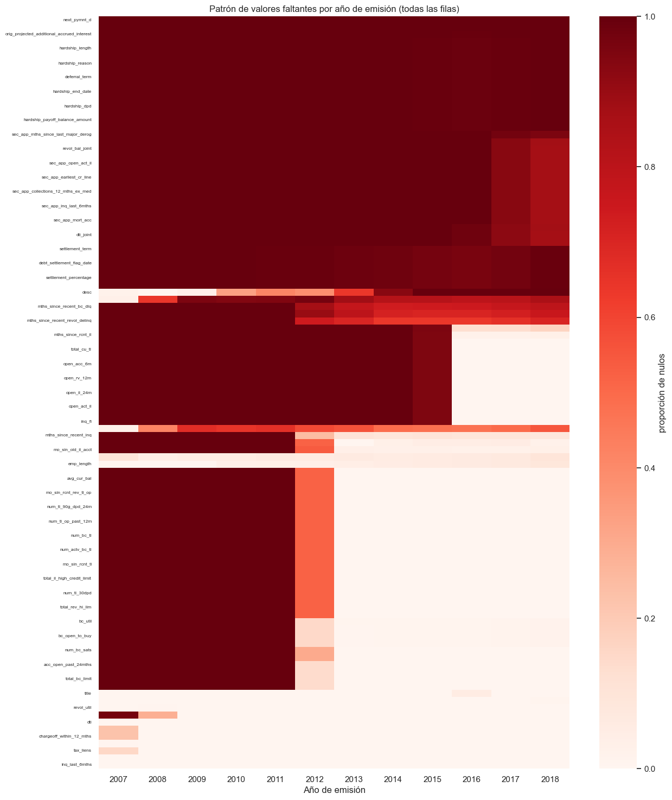
fig, axes = plt.subplots(1, 2, figsize=(18, 6)) # Concentración de nulos por fila + missingno
axes[0].hist(nulos_por_fila, bins=range(0, int(nulos_por_fila.max()) + 2), color="#4C72B0") # Número de nulos por fila
axes[0].set_title("Número de columnas nulas por fila (151 columnas)"); axes[0].set_xlabel("nulos en la fila") # Títulos
msno.bar(df[cfg.NUMERICAS_EDA + cfg.CATEGORICAS_EDA], ax=axes[1], fontsize=8, color="#4C72B0") # Completitud de las variables de trabajo
axes[1].set_title("Completitud de las variables de trabajo (missingno)") # Título
plt.show() # Muestra la figura
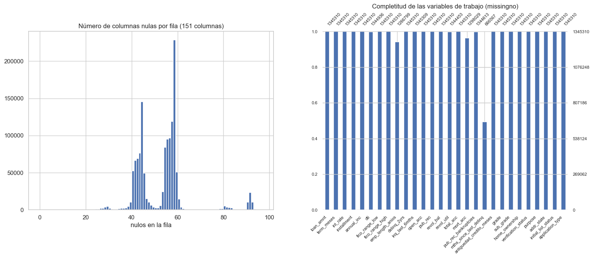
con_nulos = [c for c in cfg.NUMERICAS_EDA + cfg.CATEGORICAS_EDA if df[c].isna().any()] # Variables de trabajo con algún nulo
msno.heatmap(df[con_nulos], figsize=(9, 6), fontsize=9) # Correlación de nulidad entre variables (datos completos)
plt.title("Correlación de nulidad (missingno)") # Título
plt.show() # Muestra la figura
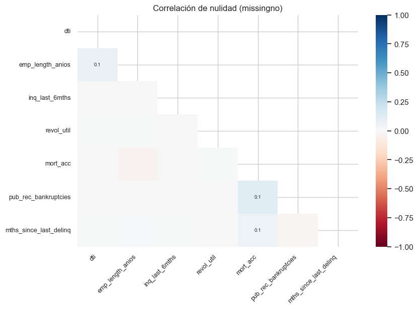
mcar_todas["relacion_con_default"] = np.where(mcar_todas["p_valor"] < cfg.ALFA, "NO MCAR (p < 0.05)", "compatible con MCAR") # Interpretación
mcar_trabajo = mcar_todas.reindex([c for c in ["emp_length", "mths_since_last_delinq", "mort_acc", "revol_util", "dti", "pub_rec_bankruptcies", "earliest_cr_line", "inq_last_6mths"] if c in mcar_todas.index]) # Columnas de trabajo con nulos
display(mcar_trabajo) # Prueba sobre las variables de trabajo
print("Resumen sobre las", len(mcar_todas), "columnas con nulos parciales:") # Resumen general
mcar_todas["relacion_con_default"].value_counts() # Cuántas columnas muestran nulos relacionados con el target
| pct_nulos | tasa_default_si_nulo | tasa_default_si_presente | chi2 | p_valor | relacion_con_default | |
|---|---|---|---|---|---|---|
| columna | ||||||
| emp_length | 5.8359 | 0.2691 | 0.1953 | 2,520.7329 | 0.0000 | NO MCAR (p < 0.05) |
| mths_since_last_delinq | 50.4525 | 0.1926 | 0.2068 | 420.3151 | 0.0000 | NO MCAR (p < 0.05) |
| mort_acc | 3.5145 | 0.1456 | 0.2016 | 893.5316 | 0.0000 | NO MCAR (p < 0.05) |
| revol_util | 0.0637 | 0.2100 | 0.1996 | 0.5181 | 0.4716 | compatible con MCAR |
| dti | 0.0278 | 0.1898 | 0.1996 | 0.1672 | 0.6826 | compatible con MCAR |
| pub_rec_bankruptcies | 0.0518 | 0.1693 | 0.1996 | 3.8272 | 0.0504 | compatible con MCAR |
| inq_last_6mths | 0.0001 | 0.0000 | 0.1996 | 0.0000 | 1.0000 | compatible con MCAR |
Resumen sobre las 103 columnas con nulos parciales:
relacion_con_default
NO MCAR (p < 0.05) 95
compatible con MCAR 8
Name: count, dtype: int64
La prueba anterior contrasta, para cada columna, si estar nulo es independiente del target (chi-cuadrado sobre la tabla 2×2 nulo × default). Un valor p < 0.05 indica que los nulos no son completamente al azar (no MCAR): su presencia aporta información sobre el riesgo. Con 1,3 millones de filas casi cualquier diferencia resulta significativa, por lo que también se reporta la magnitud (tasa de default con y sin dato).
plan = pd.DataFrame({ # Plan de tratamiento de nulos para las variables de trabajo
"pct_nulos": [100 * df[c].isna().mean() for c in cfg.NUMERICAS_EDA + cfg.CATEGORICAS_EDA], # % de nulos
}, index=cfg.NUMERICAS_EDA + cfg.CATEGORICAS_EDA) # Índice = variables
plan = plan[plan["pct_nulos"] > 0].sort_values("pct_nulos", ascending=False) # Solo las que tienen nulos
plan["tratamiento"] = [ # Regla de tratamiento por variable
"Indicador de nulo + imputación con mediana de train (nulo = sin morosidad registrada)" if c == "mths_since_last_delinq" # Caso no MCAR con 30–70 % de nulos
else "Indicador de nulo + imputación con mediana de train (nulos no MCAR)" if c in cfg.VARIABLES_CON_INDICADOR # Pocos nulos pero informativos
else "Imputación con mediana de train" if c in cfg.NUMERICAS_EDA # Numéricas con pocos nulos
else "Categoría 'DESCONOCIDO'" # Categóricas
for c in plan.index] # Recorre cada variable
plan # Muestra el plan
| pct_nulos | tratamiento | |
|---|---|---|
| mths_since_last_delinq | 50.4525 | Indicador de nulo + imputación con mediana de ... |
| emp_length_anios | 5.8359 | Indicador de nulo + imputación con mediana de ... |
| mort_acc | 3.5145 | Indicador de nulo + imputación con mediana de ... |
| revol_util | 0.0637 | Imputación con mediana de train |
| pub_rec_bankruptcies | 0.0518 | Imputación con mediana de train |
| dti | 0.0278 | Imputación con mediana de train |
| inq_last_6mths | 0.0001 | Imputación con mediana de train |
Para las 151 columnas originales el criterio es: > 70 % de nulos → eliminar; 30–70 % →
imputación avanzada o indicador; < 30 % → mediana/moda o categoría «DESCONOCIDO». Además,
se excluyen por fuga de información todas las variables registradas después de la
originación (pagos, recuperaciones, last_*, hardship_*, settlement_*, out_prncp, etc.),
porque solo se conocen cuando el préstamo ya está en curso o terminado.
Comentario (faltantes). De las 151 columnas, 46 no tienen nulos, 58 superan el 30 % y
42 el 70 % (datos de co-solicitante, hardship, settlement, desc, member_id al 100 %).
El mapa por año muestra que los nulos son sistemáticos por época: muchas variables de
buró (open_acc_6m, il_util, mths_since_rcnt_il…) solo existen desde finales de 2015
(95 % nulos en 2015, ≈ 0 % desde 2016), las de co-solicitante aparecen desde 2016 (solicitudes
conjuntas) y mort_acc falta en todos los préstamos anteriores a 2012. Es decir,
los nulos se concentran en columnas y periodos, no en filas aisladas. En 95 de las 103
columnas con nulos parciales la probabilidad de faltar está relacionada con el default
(no MCAR). Entre las variables de trabajo: sin emp_length el default sube a 26,9 %
(vs 19,5 %), sin mort_acc baja a 14,6 % (préstamos antiguos) y sin
mths_since_last_delinq es 19,3 % (vs 20,7 %). Por eso esas tres reciben un indicador de
nulo además de la imputación con la mediana de train.
2.5 Resumen ejecutivo del EDA#
Aspecto |
Hallazgo |
Decisión para el preprocesamiento |
|---|---|---|
Tamaño y target |
2.260.701 filas; 1.345.310 con desenlace final; 20,0 % default (4:1) |
Filtrar a |
Calidad |
|
Se conservan todas las filas (sin muestreo ni eliminación); escalado estándar |
Asimetría |
Ninguna variable normal; |
|
Predictores más prometedores |
|
Se incluyen todas las variables conocidas al originar el préstamo (17 numéricas + 7 categóricas) |
Multicolinealidad |
FICO bajo/alto (r = 1), monto/cuota (0,95), |
Excluir |
Categorías raras |
< 1 % en |
Agrupar en |
Faltantes |
42 columnas > 70 %; nulos por época; |
Eliminar columnas > 70 % y de fuga; indicador + mediana en 3 variables |
Fuga de información |
Pagos, recuperaciones, |
Excluidas |
Balanceo |
Desbalance moderado |
Sin remuestreo; métricas y umbral adecuados |